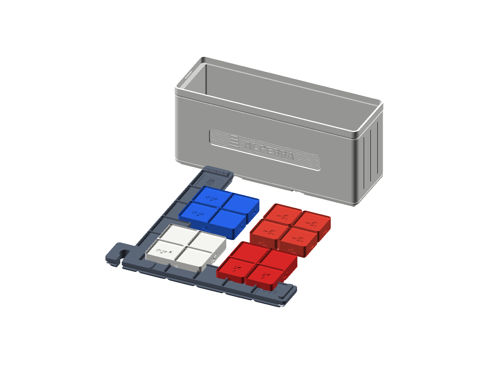

Big Ideas Middle School Daily Catch-Up Workbook
The "Touch • Stack • Prove" System for Kids Who Hate Showing Work (SC-6 & Blocks Edition)
Download the 45-Day Student Catch-Up Workbook & Coach Key
Built specifically for middle schoolers who say "I hate math," freeze up when told to "show your work," or get frustrated when the textbook demands the same operation in four different ways. Print the Student Workbook with pre-formatted Touch • Stack • Prove tickets and the companion Parent/Teacher Coaching Key.
1. Why Kids Hate Middle School Math—And How We Fix It
When a middle schooler says "I'm bad at math" or "I hate math," they almost never hate actual patterns, building things, or figuring out puzzles. What they hate are three artificial barriers built into traditional middle school math homework:
Barrier 1: The "Show Your Work" Handwriting Trap
In traditional classrooms, "showing your work" means rewriting an entire line of numbers five times in a row just to change one piece at a time:
$\(\begin{aligned}
50 - (4 \times 8) + 6 &= 50 - 32 + 6 \\
&= 18 + 6 \\
&= 24
\end{aligned}\)$
For a student with handwriting fatigue, ADHD, dysgraphia, or working-memory overload, copying the same numbers over and over is torture. One miscopied digit ruins the answer, or the student simply computes it mentally, writes 24, and gets marked wrong for "not showing steps."
The StackCalc Fix — Your 2-Number "Elevator Snapshot" IS Your Work:
On the SC-6 Calculator, intermediate steps don't vanish into thin air—they sit visibly on Floor 2 (Y) and Floor 1 (X) of the 4-line LCD screen! Instead of rewriting 5 lines of algebra, students fill in one tiny Elevator Snapshot box (Y: ___ | X: ___) right before pressing the final operation key. Writing two numbers proves they did the intermediate steps, with zero recopying busywork!
Barrier 2: The "Solve the Same Problem 4 Different Ways" Frustration
The Big Ideas Math textbook routinely asks students to perform the exact same operation in three or four different ways: - "Find the GCF of 18 and 24 using (a) a list of factors, (b) factor trees, AND (c) a Venn diagram." - "Divide \(\frac{3}{4} \div \frac{1}{8}\) using (a) a tape diagram, (b) common denominators, AND (c) the reciprocal." - "Find the equivalent ratio using (a) a tape diagram, (b) a ratio table, (c) a double number line, AND (d) unit rates."
Kids who dislike math feel like the textbook is playing a trick on them: "Why do I have to do four times the drawing if I already know the answer?!"
The StackCalc Fix — "One Build, Three Camera Angles":
We never make a student draw three separate procedures from scratch. Instead, the student builds the problem ONCE with physical StackCalc blocks on their desk. Every lesson includes a "Multiple-Ways Decoder" proving that the textbook's "different methods" are literally just three camera angles of the single block build already sitting in front of them—and one button press on the SC-6 ([FDISP],[g] [SIMP],[g] [FACT],[g] [÷R]) switches between those exact views instantly!
Barrier 3: Waiting Until Tomorrow to Find Out You Got It Wrong
Nothing kills motivation faster than struggling through a worksheet, handing it in, and getting it back 24 hours later covered in red ink.
The StackCalc Fix — Instant Green-Light Self-Checking (
[f] [LASTX]):
In this program, the calculator is your personal referee. Students build with blocks first, then use the SC-6's dedicated[f] [LASTX],[g] [SIMP],[g] [FACT], and[g] [÷R]keys to prove their own answer in 3 seconds. When the screen bounces back to the starting number, the student gets an immediate dopamine win—they know they nailed it before anyone else even looks at the page.
2. The Daily 15-Minute "Touch • Stack • Prove" Protocol
Every single day in this 45-day catch-up program uses the exact same predictable, low-stress 15-minute routine and the 3-Box Work Ticket:
+===================================================================================+
| THE 3-BOX "TOUCH • STACK • PROVE" WORK TICKET (ZERO BUSYWORK REWRITES!) |
+-----------------------------------------------------------------------------------+
| [BOX 1: 🧱 TOUCH IT] [BOX 2: 📟 STACK IT] [BOX 3: ✅ PROVE IT] |
| (10-Second Block Build) (2-Number LCD Snapshot) (Instant Green Light) |
| |
| Build it once on your desk Look at your SC-6 screen Press [f][LASTX] (or |
| with the physical blocks. right BEFORE the last key. the lesson check key). |
| Check the box & circle how Write what sits on Y and X: Did your starting |
| your 1 build shows all the +------------------------+ number bounce back? |
| textbook's "ways" at once! | Floor 2 (Y): _______ | |
| | Floor 1 (X): _______ | FINAL ANSWER: _______ |
| [x] Built with Blocks! +------------------------+ [x] Proven on SC-6! |
+===================================================================================+
The 15-Minute Daily Clock
- Minutes 0–2 | The "Why Should I Care?" Hook: A fast, real-life maker, gaming, sports, food, or skateboarding scenario—zero dry textbook lecture.
- Minutes 2–6 | Hands-On Build & "Multiple-Ways Decoder": Build one physical model on the desk and see how it simultaneously answers every representation the Big Ideas textbook asks for.
- Minutes 6–12 | The Daily 3-Problem Workout: Just three problems per day (1 Warm-Up, 1 "Multiple-Ways" Core Target, 1 Boss Challenge) using the 3-Box Ticket.
- Minutes 12–15 | 60-Second Speed Check & Streak Stamp: Run a 60-second
[f] [?]Quiz Sprint or[f] [LASTX]proof and check off today's box on the 45-Day Catch-Up Map.
3. Master 45-Day Pacing Map (Big Ideas Grade 6 + Grade 7 Bridge)
| Chapter | Big Ideas Math Topic | Days | Physical Block Kit | Core SC-6 Keys Unlocked |
|---|---|---|---|---|
| Ch. 1 | Numerical Expressions & Factors | Days 1–5 | Counting Tiles (COUNT-01) & Prime Studio (PRIME-01) |
[ENTER], [g] [÷R], [f] [LASTX], [x²], [x³], [g] [yˣ], [PRIME], [g] [FACT], [GCF], [f] [LCM] |
| Ch. 2 | Fractions & Decimals | Days 6–10 | Fraction Studio 84mm (FRAC-01) & Place Value (PLACE-01) |
[FDISP], [a ᵇ/c], [f] [d/c], [g] [SIMP], [f] [1/x], [PV], [f] [IP], [g] [FP], [$] |
| Ch. 3 | Ratios, Rates & Percents | Days 11–15 | Counting Tiles (COUNT-01), Dominoes (DOMI-01), Fraction Towers |
[g] [a:b], [g] [REP], [x⇄y], [%], [f] [▸%], [g] [%CHG], [f] [▸cm], [g] [▸in], [f] [▸kg], [g] [▸lb] |
| Ch. 4 | Algebraic Expressions & Properties | Days 16–19 | Algebra Boxes & Stage (ALGB-01) & Counting Tiles |
4-Stack X,Y,Z,T, [x⇄y], [f] [R↓], [GCF], [x²] |
| Ch. 5 | Areas of Polygons & Elapsed Time | Days 20–23 | Counting Tiles (COUNT-01), Algebra Stage, Planetary Clock (TIME-01) |
[f] [RECT], [g] [TRI], [Σ+], [f] [Σx], [g] [CLΣ], [🕒], [g] [▸HMS], [f] [▸HR] |
| Ch. 6 | Integers & The Coordinate Plane | Days 24–28 | Ten-Frame Bicolor Counters (BASE-10) & Number Rack (RACK-01) |
[+/-], [|x|], [f] [LINE], [≠], [f] [>], [g] [<], [f] [≥], [g] [≤] |
| Ch. 7 | Equations & Inequalities | Days 29–33 | Algebra Stage (ALGB-01) & Bicolor Counters (BASE-10) |
[f] [LASTX], [g] [REP], [≠], [f] [>], [g] [<], [f] [≥], [g] [≤] |
| Ch. 8 | Surface Area & Volume of 3D Solids | Days 34–37 | Counting Cubes (COUNT-01) & Gridfinity Enclosures |
[f] [RECT], [g] [TRI], [Σ+], [f] [Σx], [f] [PRISM], [g] [CONE], [π], [f] [CIRC], [g] [HYP] |
| Ch. 9 | Statistical Measures & Data Displays | Days 38–41 | Probability Dice & Spinner (PROB-01) & Counting Tiles |
[Σ+], [N], [g] [x̄], [f] [MED], [g] [MODE], [RNG], [f] [MIN], [g] [MAX], [f] [1Q], [g] [3Q], [IQR], [g] [MAD], [FRQ] |
| Ch. 10 | Grade 7 Bridge: Signed Math, 2-Step Equations & Probability | Days 42–45 | Bicolor Counters, Algebra Stage (ALGB-01), Dice & Spinner (PROB-01) |
[+/-], [f] [LASTX], [🎲], [f] [1…x], [x!], [f] [nCr], [g] [nPr], [f] [?] |
CHAPTER 1: Numerical Expressions & Factors (Days 1–5)
Aligned to Big Ideas Math Grade 6, Chapter 1: Whole Number Operations, Powers & Exponents, Order of Operations, Prime Factorization, GCF & LCM.

Day 1 (Lesson 1.1): Whole Number Division & Leftovers That Actually Make Sense
- Big Ideas Lesson 1.1: Whole Number Operations (Multi-Digit Division & Interpreting Remainders)
- The Real Question: When you divide things up in real life, what happens to the leftovers—and how can you prove your division is right in 3 button clicks without doing long division twice?
- Why Should I Care? (2-Min Hook): Imagine you have 135 skateboard bearings and each board needs 8 bearings (2 per wheel). If you type \(135 \div 8\) into a phone calculator, it spits out
16.875. What on earth is0.875of a steel bearing?! You can't saw a bearing into.875pieces! You want to know two real numbers: How many full skateboards can I build? and How many bearings are sitting left over in the tray?
The "One Build, Multiple Ways" Decoder
Your textbook asks you to interpret division leftovers in three different ways: (1) Quotient with Remainder (\(Q\text{ R }R\)), (2) Mixed Number (\(Q\frac{R}{D}\)), and (3) Check via Multiplication (\((Q \times D) + R = \text{Total}\)). Here is how one tray build + one SC-6 sequence gives you all three at once:
| Camera Angle | What You Do | What You See |
|---|---|---|
Angle 1: Physical Blocks (COUNT-01) |
Take 23 Counting Tiles and snap them into rows of 4 tiles each. | You get 5 full rows of 4 (\(= 20\)), and 3 loose tiles sitting at the bottom! |
Angle 2: SC-6 Remainder View ([g] [÷R]) |
Key 23 [ENTER] 4 [g] [÷R]. |
Floor 1 (X) shows 5 (Full Rows / Quotient) and Floor 2 (Y) shows 3 (Leftover Tiles / Remainder) at the exact same time! |
Angle 3: 3-Click Self-Proof ([f] [LASTX]) |
Right after [g] [÷R], press [f] [LASTX] [×] [+]. |
[f] [LASTX] brings back the divisor 4, [×] multiplies \(5 \times 4 = 20\) while Remainder 3 waits on Floor 2, and [+] adds \(20 + 3 = 23\)! |
Guided SC-6 Elevator Trace (The Skate Bearings Challenge: \(135 \div 8\))
| Step | Keystroke | Floor 4 (T) |
Floor 3 (Z) |
Floor 2 (Y) |
Floor 1 (X) |
What Just Happened? |
|---|---|---|---|---|---|---|
| 1 | 135 [ENTER] |
0 |
0 |
135 |
135 |
Push 135 bearings onto Floor 2 (Y). |
| 2 | 8 |
0 |
0 |
135 |
8 |
Type 8 bearings per skateboard on Floor 1 (X). |
| 3 | [g] [÷R] |
0 |
0 |
7 |
16 |
BOOM! X = 16 full boards, Y = 7 leftover bearings! |
| 4 | [f] [LASTX] |
0 |
7 |
16 |
8 |
Pulls divisor 8 back from memory! Remainder 7 rides up to Z. |
| 5 | [×] |
0 |
0 |
7 |
128 |
Multiplies \(16 \times 8 = 128\) bearings used. Leftover 7 drops to Y. |
| 6 | [+] |
0 |
0 |
0 |
135 |
Adds \(128 + 7 = 135\). Matches starting number—100% Proven! |
Daily 3-Problem Workout (Write Only the 2-Number Snapshot!)
- Problem 1 (Warm-Up): Arrange 31 Counting Tiles into groups of 6. How many full groups of 6 can you make, and how many tiles are left over?
- 🧱 Touch It:
[ ]Built 5 rows of 6 with 1 leftover tile. - 📟 Stack It (
31 [ENTER] 6 [g] [÷R]): SnapshotY (Remainder): 1|X (Quotient): 5 - ✅ Prove It (
[f] [LASTX] [×] [+]): Screen returns to31! Final Answer:5 R 1(or \(5\frac{1}{6}\)). - Problem 2 (Multiple-Ways Target): A 3D printer spool has 250 grams of filament. Each Prime Studio box lid takes 36 grams. Find (a) how many full lids you can print, (b) how many grams are left over, and (c) prove it with
[f] [LASTX]. - 🧱 Touch It:
[ ]Modeled 36g chunks out of 250g. - 📟 Stack It (
250 [ENTER] 36 [g] [÷R]): SnapshotY (Leftover g): 34|X (Full Lids): 6 - ✅ Prove It (
[f] [LASTX] [×] [+]): \(6 \times 36 = 216 \to 216 + 34 = 250\). Final Answer:6 lids, 34g left over. - Problem 3 (Boss Level — "Do We Need an Extra Van?"): 115 middle schoolers are going to a robotics tournament. Each van holds 14 students. How many vans must the school book so nobody gets left behind?
- 📟 Stack It (
115 [ENTER] 14 [g] [÷R]): SnapshotY (Students Left): 3|X (Full Vans): 8 - ✅ Prove It: 8 vans hold \(8 \times 14 = 112\) kids, leaving
3kids standing in the parking lot! So you need 9 vans total.
Day 2 (Lesson 1.2): Powers & Exponents — Squares, Cubes, and Tower Growth
- Big Ideas Lesson 1.2: Powers and Exponents
- The Real Question: Why does \(3^4\) mean \(3 \times 3 \times 3 \times 3 = 81\) instead of \(3 \times 4 = 12\)—and how can you see the difference with physical tiles in 5 seconds?
- Why Should I Care? (2-Min Hook): The #1 trap in 6th-grade math is seeing \(2^3\) and writing \(6\). If you fold a piece of paper in half 3 times (\(2^3\)), you don't get 6 layers—you get \(2 \times 2 \times 2 = 8\) layers! Exponents are how viral videos, bacteria, and Minecraft slime splits explode in size.
The "One Build, Multiple Ways" Decoder
The textbook asks for three forms of every power: (1) Exponential Form (\(4^3\)), (2) Repeated Multiplication / Factor Form (\(4 \times 4 \times 4\)), and (3) Standard Value (\(64\)).
| Camera Angle | What You Do | What You See |
|---|---|---|
Angle 1: Physical Blocks (COUNT-01) |
Build a 4 by 4 flat square of Counting Tiles (\(4^2 = 16\)). Now stack 4 of those square layers high (\(4^3 = 64\)). | A 2D square is [x²] (2 dimensions: length \(\times\) width). A 3D cube is [x³] (3 dimensions: length \(\times\) width \(\times\) height)! |
| Angle 2: SC-6 Dedicated Power Keys | For squares: type 4 [x²] \(\to\) 16. For cubes: type 4 [x³] \(\to\) 64. For any power \(b^n\): type 4 [ENTER] 3 [g] [yˣ] \(\to\) 64. |
Floor 2 (Y) is the Base (what tile size you're using). Floor 1 (X) is the Exponent (how many dimensions/times you multiply it). |
Angle 3: SC-6 Constant [g] [REP] Ladder |
Type 4 [g] [REP] (fills all 4 floors with 4). Press [×] once \(\to\) 16 (\(4^2\)). Press [×] again \(\to\) 64 (\(4^3\)). Press [×] again \(\to\) 256 (\(4^4\))! |
You literally feel each [×] click multiply by another 4—proving \(4^3\) is three 4s multiplied, never \(4 \times 3\)! |
Daily 3-Problem Workout
- Problem 1 (Warm-Up Square vs. Double): Build a \(5 \times 5\) square array of tiles. Find \(5^2\) and compare it to \(5 \times 2\).
- 🧱 Touch It:
[ ]Built \(5 \times 5\) square (25 tiles, NOT 10 tiles!). - 📟 Stack It (
5 [x²]): SnapshotX: 25(whereas5 [ENTER] 2 [×]is10). - ✅ Prove It (
[f] [√x]): Press[f] [√x]([f] [x²]) and watch25shrink right back to side length5! - Problem 2 (Multiple-Ways Target): Write \(2^5\) as repeated multiplication and find its value using both the
[g] [REP]ladder and[g] [yˣ]. - 🧱 Touch It: \(2 \times 2 \times 2 \times 2 \times 2\) (5 factors of 2).
- 📟 Stack It (
2 [ENTER] 5 [g] [yˣ]): Before[g] [yˣ],Y (Base): 2|X (Exponent): 5. Result:32. - ✅ Prove It (
2 [g] [REP] [×] [×] [×] [×]): Steps through4 -> 8 -> 16 -> 32! - Problem 3 (Boss Level — Perfect Cube Mystery): A giant Rubik's cube is made of 216 small cubes. How many small cubes wide is one edge? (Test with
[x³]or[g] [ˣ√y]:216 [ENTER] 3 [g] [ˣ√y]). - 📟 Stack It (
6 [x³]):X: 216. Final Answer:6 cubes wide(\(6^3 = 216\)).
Day 3 (Lesson 1.3): Order of Operations Without Parentheses Torture
- Big Ideas Lesson 1.3: Order of Operations (PEMDAS / GEMDAS)
- The Real Question: How can you solve a huge multi-step math problem without copying 6 lines of scratch work or losing points to parentheses errors?
- Why Should I Care? (2-Min Hook): Why do kids hate Order of Operations? Because your teacher makes you copy the whole line over and over, and if you type it into a regular calculator, forgetting one parenthesis gives the wrong answer. On the SC-6, there are no parentheses keys at all—because the 4-story glass elevator (\(X, Y, Z, T\)) automatically holds your pieces while you work from the inside out!
The "One Build, Multiple Ways" Decoder
To evaluate \(50 - (4 \times 8) + 6\) or \((8 + 4) \times (9 - 3)\), the textbook wants to see your intermediate steps. On the SC-6, your Y and X registers hold the intermediate steps for you!
| Textbook Multi-Line Rewrite (Old Way) | SC-6 Elevator Snapshot (Our Way — Write 2 Numbers!) |
|---|---|
| Line 1: \((8 + 4) \times (9 - 3)\) Line 2: \(= 12 \times (9 - 3)\) Line 3: \(= 12 \times 6\) Line 4: \(= 72\) |
1. Solve Room 1: 8 [ENTER] 4 [+] \(\to\) 12 waits on the elevator.2. Solve Room 2: 9 [ENTER] 3 [-] \(\to\) 6 appears on Floor 1 (X), while 12 sits right above it on Floor 2 (Y)!3. Write Snapshot: Y: 12 | X: 64. Press [×] \(\to\) 72. Done! |
Guided SC-6 Elevator Trace: Evaluating \(40 - 3 \times (2 + 3)^2 \div 5\)
| Step | Keystroke | Floor 3 (Z) |
Floor 2 (Y) |
Floor 1 (X) |
Inside-Out Game Plan |
|---|---|---|---|---|---|
| 1 | 40 [ENTER] |
0 |
40 |
40 |
Park 40 upstairs on the balcony to wait. |
| 2 | 3 [ENTER] |
40 |
3 |
3 |
Park 3 on Floor 2 (40 rides up to Floor 3 Z!). |
| 3 | 2 [ENTER] 3 [+] |
40 |
3 |
5 |
Solve inside parentheses \((2+3) = 5\). |
| 4 | [x²] |
40 |
3 |
25 |
Square it: \(5^2 = 25\). Notice 3 is still waiting on Y! |
| 5 | [×] |
0 |
40 |
75 |
Multiply \(3 \times 25 = 75\). Notice 40 drops down to Y! |
| 6 | 5 [÷] |
0 |
40 |
15 |
Divide \(75 \div 5 = 15\). Snapshot before final key: Y: 40 | X: 15. |
| 7 | [-] |
0 |
0 |
25 |
Subtract \(40 - 15 = 25\)! Zero scratch-paper rewrites! |
Daily 3-Problem Workout
- Problem 1 (Warm-Up Two-Room Combo): Evaluate \((14 + 6) \div (7 - 2)\).
- 🧱 Touch It:
[ ]Built Group 1 (\(14+6=20\) tiles) and Group 2 (\(7-2=5\) tiles). - 📟 Stack It (
14 [ENTER] 6 [+] 7 [ENTER] 2 [-]): Snapshot before[÷]:Y: 20 | X: 5 - ✅ Prove It (
[÷]then[f] [LASTX] [×]): Result4(4 × 5 = 20). Final Answer:4. - Problem 2 (Multiple-Ways Target): Evaluate \(60 - 4 \times (3 + 2)^2\).
- 📟 Stack It (
60 [ENTER] 4 [ENTER] 3 [ENTER] 2 [+] [x²] [×]): Snapshot before[-]:Y: 60 | X: 100... wait: if the problem is \(120 - 4 \times (3 + 2)^2\), let's do \(120 - 4 \times (3+2)^2\):120 [ENTER] 4 [ENTER] 3 [ENTER] 2 [+] [x²] [×]givesY: 120 | X: 100. - ✅ Prove It (
[-]):120 - 100 = 20. Final Answer:20. - Problem 3 (Boss Level — Fraction Bar Grouping): Evaluate \(\frac{3^3 + 9}{15 - 3 \times 2}\). (Hint: A fraction bar is just Top Room divided by Bottom Room!)
- 📟 Stack It: Top Room:
3 [x³] 9 [+](\(\to 36\)). Bottom Room:15 [ENTER] 3 [ENTER] 2 [×] [-](\(\to 9\)). Snapshot before[÷]:Y: 36 | X: 9. - ✅ Prove It (
[÷]): Final Answer:4.
Day 4 (Lesson 1.4): Prime Factorization — Why Factor Trees Are Just Stacked Blocks
- Big Ideas Lesson 1.4: Prime Factorization
- The Real Question: What makes a number "Prime," and why do you always get the exact same prime blocks at the bottom of a factor tree no matter how you split the number first?
- Why Should I Care? (2-Min Hook): Kids hate drawing factor trees because if your friend splits \(60\) into \(6 \times 10\) and you split \(60\) into \(4 \times 15\), your trees look completely different in the middle—and you worry yours is wrong! With the Prime Factor Studio (
PRIME-01), you can physically see and hold the "atomic LEGO bricks" of any number.

The "One Build, Multiple Ways" Decoder
The textbook asks for (1) Factor Pairs, (2) Different Factor Tree Branches, and (3) Prime-Power Exponential Notation (\(2^2 \times 3 \times 5\)). Here is how one tower of Prime Studio blocks does all three at once:
| Camera Angle | What You Do | What You See |
|---|---|---|
Angle 1: Rectangular Array Test (COUNT-01) |
Try to arrange 13 Counting Tiles into a rectangle vs. 12 Counting Tiles. | 13 can ONLY make a single skinny \(1 \times 13\) line (Prime!). 12 makes \(2 \times 6\) and \(3 \times 4\) rectangles (Composite!). |
Angle 2: Prime Factor Tower (PRIME-01) |
For 60, grab two Blue [2] blocks, one Green [3] block, and one Yellow [5] block. Stack them in a socket on the lid! |
Because the block heights are logarithmic (\(h = 42\log_{10}(p)\text{ mm}\)), stacking [2] + [2] + [3] + [5] reaches exactly the 60 height mark! Group [2][3]=6 and [2][5]=10 (that's the \(6 \times 10\) tree!), or group [2][2]=4 and [3][5]=15 (that's the \(4 \times 15\) tree!). Same blocks! |
Angle 3: SC-6 [PRIME] & [g] [FACT] |
Key 60 [PRIME] \(\to\) NOT PRIME. Now key 60 [g] [FACT] ([g] [PRIME]). |
The SC-6 screen immediately displays 2² × 3 × 5! |
Daily 3-Problem Workout
- Problem 1 (Prime Detective): Test
29and51—which one is secretly composite? - 🧱 Touch It: Can 51 tiles split into 3 equal rows?
- 📟 Stack It:
29 [PRIME]\(\to\)PRIME.51 [PRIME]\(\to\)NOT PRIME! Now press51 [g] [FACT]\(\to\)3 × 17. - ✅ Prove It (
3 [ENTER] 17 [×]): Screen shows51! - Problem 2 (Two Trees, One Tower): Build the Prime Factor Tower for 72. Show how both \(8 \times 9\) and \(6 \times 12\) use the exact same prime blocks.
- 🧱 Touch It:
[ ]Stacked three[2]blocks (\(=8\)) and two[3]blocks (\(=9\)). Rearranged into \(([2][3]) \times ([2][2][3]) = 6 \times 12\). - 📟 Stack It (
72 [g] [FACT]): Screen displays2³ × 3². - ✅ Prove It (
2 [x³] 3 [x²] [×]): SnapshotY: 8 | X: 9\(\to\)72! - Problem 3 (Boss Level — Mystery Tower): What number has the prime factorization \(2^2 \times 3 \times 7\)? Build it on the stack first, then verify with
[g] [FACT]. - 📟 Stack It (
2 [x²] 3 [×] 7 [×]): SnapshotY: 12 | X: 7\(\to\)84. - ✅ Prove It (
[g] [FACT]):84decomposes right back into2² × 3 × 7!
Day 5 (Lesson 1.5): GCF & LCM in One Look — Lists, Trees, and Venn Diagrams
- Big Ideas Lessons 1.5 & 1.6: Greatest Common Factor (GCF) and Least Common Multiple (LCM)
- The Real Question: Why does the textbook make you find GCF and LCM using lists, trees, AND Venn diagrams—and how do two side-by-side block towers show both GCF and LCM at the same time?
- Why Should I Care? (2-Min Hook): Usually, GCF and LCM take half a page of tedious factor lists and multiple lists, and kids constantly mix up which one is which. When you stand two Prime Factor Studio towers next to each other on the 12-socket lid, GCF is the blocks they share in common (the overlap), and LCM is the tallest tower needed to cover both!

The "One Build, Multiple Ways" Decoder (Comparing 20 and 50)
| Textbook Method | How Your 1 Block Build (PRIME-01) Shows It |
SC-6 Instant Keystroke |
|---|---|---|
| 1. Prime Factor Towers | Socket A (20): [2] + [2] + [5]Socket B ( 50): [2] + [5] + [5] |
20 [g] [FACT] \(\to\) 2² × 550 [g] [FACT] \(\to\) 2 × 5² |
| 2. Venn Overlap (GCF) | Look across the two towers: both share one [2] and one [5]. Stack [2] + [5] in the middle socket \(= 10\)! |
20 [ENTER] 50 [GCF] \(\to\) 10(Or [f] [C.FAC] [f][PRIME] to list all common factors!) |
| 3. Venn Union (LCM) | Take the max count of each block color: two [2]s and two [5]s. Stack [2]+[2]+[5]+[5] \(= 100\)! |
20 [ENTER] 50 [f] [LCM] ([f][GCF]) \(\to\) 100 |
Guided SC-6 Elevator Trace: The Gold Rule Check (\(\text{GCF} \times \text{LCM} = A \times B\))
Did you know you can prove your GCF and LCM are 100% right by multiplying them together? For any two numbers \(A\) and \(B\):
$\(\text{GCF}(A, B) \times \text{LCM}(A, B) = A \times B\)$
Let's check 12 and 18:
| Step | Keystroke | Floor 2 (Y) |
Floor 1 (X) |
What Just Happened? |
|---|---|---|---|---|
| 1 | 12 [ENTER] 18 [GCF] |
0 |
6 |
Greatest Common Factor of 12 and 18 is 6. |
| 2 | 12 [ENTER] 18 [f] [LCM] |
6 |
36 |
Least Common Multiple is 36 (while GCF 6 waits on Y!). |
| 3 | [×] |
0 |
216 |
\(\text{GCF} \times \text{LCM} = 6 \times 36 = 216\) ( Matches \(12 \times 18 = 216\)!). |
Daily 3-Problem Workout
- Problem 1 (Warm-Up Twin Towers): Build the Prime Factor Towers for 18 (
[2][3][3]) and 24 ([2][2][2][3]). Find both the GCF and LCM. - 🧱 Touch It:
[ ]Shared overlap: one[2]and one[3](\(= 6\)). Tallest union: three[2]s and two[3]s (\(= 72\)). - 📟 Stack It:
18 [ENTER] 24 [GCF]\(\to\)6.18 [ENTER] 24 [f] [LCM]\(\to\)72. SnapshotY: 6 | X: 72. - ✅ Prove It (
[×]): \(6 \times 72 = 432\) (and \(18 \times 24 = 432\)!). Final Answer:GCF = 6, LCM = 72. - Problem 2 (Hot Dog & Bun Synchronizer): Hot dogs come in packs of 8 (
[2][2][2]) and buns come in packs of 12 ([2][2][3]). What is the smallest number of hot dogs and buns you can buy to have zero leftovers? - 📟 Stack It (
8 [ENTER] 12 [f] [LCM]): SnapshotY: 8 | X: 12\(\to\)24. - ✅ Prove It: \(24 \div 8 = 3\) packs of hot dogs; \(24 \div 12 = 2\) packs of buns!
- Problem 3 (Boss Level — Kit Packaging): You have 36 red counters and 48 yellow counters to pack into identical station bags with none left over. What is the greatest number of bags you can make, and how many of each color go in a bag?
- 📟 Stack It (
36 [ENTER] 48 [GCF]): SnapshotY: 36 | X: 48\(\to\)12bags. - ✅ Prove It:
36 [ENTER] 12 [÷]\(\to\)3 red;48 [ENTER] 12 [÷]\(\to\)4 yellowper bag!
CHAPTER 2: Fractions & Decimals (Days 6–10)
Aligned to Big Ideas Math Grade 6, Chapter 2: Equivalence, Multiplying Fractions, Dividing Fractions, and All Four Decimal Operations.

Day 6 (Lesson 2.1): Equivalent Fractions, Mixed Numbers & Improper Fractions — Same Height, Different Outfits
- Big Ideas Chapter 2 Foundations: Equivalent Fractions, Simplifying, Mixed Numbers & Improper Fractions
- The Real Question: Why does \(\frac{12}{18}\) equal \(\frac{2}{3}\), and why are \(1\frac{3}{4}\), \(\frac{7}{4}\), and \(1.75\) literally the exact same height?
- Why Should I Care? (2-Min Hook): Fractions are where most middle schoolers decide they hate math—because teachers ask you to reduce fractions, convert mixed numbers to improper fractions, AND convert them to decimals, making it feel like three unrelated rules. In the Fraction Studio (
FRAC-01), every single block is engineered to an 84.0 mm Whole. When two towers stand at the exact same millimeter height, they are equal—period!
The "One Build, Multiple Ways" Decoder
How to enter any fraction on SC-6 using Two-Dot Syntax ([.]):
- Simple fraction \(\frac{3}{4}\): type [.] 3 [.] 4
- Mixed number \(1\frac{3}{4}\): type 1 [.] 3 [.] 4
| Textbook Requirement | Physical Block View (FRAC-01) |
SC-6 1-Click Costume Change |
|---|---|---|
| 1. Step-by-Step Simplification (\(\frac{12}{18} \to \frac{2}{3}\)) | Stand four \(\frac{1}{6}\) blocks (\(4/6 = 56\text{ mm}\)) next to two \(\frac{1}{3}\) blocks (\(2/3 = 56\text{ mm}\)). Same height! | Enter [.] 12 [.] 18 [ENTER]. Press [g] [SIMP] ([g][a ᵇ/c]) once \(\to\) 6/9 (divides by 2!). Press [g] [SIMP] again \(\to\) 2/3 (divides by 3!). |
| 2. Mixed Number \(\leftrightarrow\) Improper (\(1\frac{3}{4} \leftrightarrow \frac{7}{4}\)) | Stand one 1 Whole (\(84\text{ mm}\)) + three 1/4 blocks (\(63\text{ mm}\)) next to seven 1/4 blocks (\(147\text{ mm}\)). |
Enter 1 [.] 3 [.] 4 [ENTER]. Press [f] [d/c] ([f][a ᵇ/c]) \(\to\) 7/4. Press [a ᵇ/c] \(\to\) 1 3/4! |
| 3. Fraction \(\leftrightarrow\) Decimal (\(1\frac{3}{4} \leftrightarrow 1.75\)) | Compare the tower against the 100-grid scale. | Press [FDISP] to toggle the display between 1 3/4 and 1.75 instantly! |
Daily 3-Problem Workout
- Problem 1 (Step-by-Step Simplifier): Simplify \(\frac{24}{36}\) step-by-step and write the intermediate fraction you pass along the way.
- 🧱 Touch It:
[ ]Matched height to \(\frac{2}{3}\) tower (\(56.0\text{ mm}\)). - 📟 Stack It (
[.] 24 [.] 36 [ENTER] [g] [SIMP]): First[g] [SIMP]press shows12/18, next shows6/9, final shows2/3. - ✅ Prove It (
[FDISP]): Toggles cleanly to0.6667(\(\frac{2}{3}\)). - Problem 2 (The 3-Outfit Switcher): Convert \(\frac{19}{8}\) into (a) a Mixed Number and (b) a Decimal.
- 📟 Stack It (
[.] 19 [.] 8 [ENTER]): Press[a ᵇ/c]\(\to\)2 3/8. Press[FDISP]\(\to\)2.375. - ✅ Prove It (
19 [ENTER] 8 [g] [÷R]): Shows QuotientX: 2and RemainderY: 3(\(2\text{ R }3 = 2\frac{3}{8}\))! - Problem 3 (Boss Level — Adding Unlike Towers): Build \(\frac{1}{3} + \frac{1}{4}\) on the 12-socket Fraction Lid Tray and verify on SC-6.
- 🧱 Touch It:
[ ]\(28\text{ mm} (\frac{1}{3}) + 21\text{ mm} (\frac{1}{4}) = 49\text{ mm}\) (matches seven \(\frac{1}{12}\) blocks!). - 📟 Stack It (
[.] 1 [.] 3 [ENTER] [.] 1 [.] 4 [+]): SnapshotY: 1/3 | X: 1/4\(\to\)7/12. - ✅ Prove It (
[f] [LASTX] [-]): Subtracts1/4and returns to1/3!
Day 7 (Lesson 2.2): Multiplying Fractions & Mixed Numbers — Taking a Fraction OF a Fraction
- Big Ideas Lesson 2.1: Multiplying Fractions and Mixed Numbers
- The Real Question: When you multiply two proper fractions, why does the answer get SMALLER instead of bigger?
- Why Should I Care? (2-Min Hook): In elementary school, multiplying always made numbers bigger. So when a 6th grader sees \(\frac{1}{2} \times \frac{3}{4} = \frac{3}{8}\), their brain says "Wait, \(\frac{3}{8}\) is smaller than \(\frac{3}{4}\)!" Replace the
×symbol with the word "OF": if there is \(\frac{3}{4}\) of a pizza left in the fridge and you eat \(\frac{1}{2}\) OF it, of course your slice is smaller than what was in the box!
The "One Build, Multiple Ways" Decoder
The textbook asks for (1) A Bar / Tower Model, (2) Cross-Canceling / Simplifying Before Multiplying, and (3) Multiplying Mixed Numbers via Improper Fractions.
| Camera Angle | What You Do | What You See |
|---|---|---|
Angle 1: Physical Fraction Towers (FRAC-01) |
Place three 1/4 blocks on the desk (\(\frac{3}{4} = 63\text{ mm}\)). Now find the tower that is half as tall (\(31.5\text{ mm}\)). |
Three 1/8 blocks (\(\frac{3}{8}\)) are exactly half the height of \(\frac{3}{4}\)! |
| Angle 2: Mixed Numbers on Stack | For \(1\frac{1}{2} \times 2\frac{2}{3}\), enter 1 [.] 1 [.] 2 [ENTER] 2 [.] 2 [.] 3. |
Before pressing [×], tap [f] [d/c] if your teacher wants to see the improper fractions (Y: 3/2 | X: 8/3), then press [×] \(\to\) 4! |
Daily 3-Problem Workout
- Problem 1 (Half of a Fraction): Find \(\frac{2}{3} \times \frac{3}{4}\).
- 🧱 Touch It:
[ ]Took \(\frac{2}{3}\) of a \(\frac{3}{4}\) tower (\(\to \frac{1}{2}\) of a whole, \(42\text{ mm}\)). - 📟 Stack It (
[.] 2 [.] 3 [ENTER] [.] 3 [.] 4 [×]): SnapshotY: 2/3 | X: 3/4\(\to\)1/2. - ✅ Prove It (
[f] [LASTX] [÷]): Divides by3/4and restores2/3! - Problem 2 (Mixed Number Recipe Scaling): A batch of slime uses \(1\frac{3}{4}\) cups of glue. You are making \(2\frac{1}{2}\) batches. How much glue do you need?
- 📟 Stack It (
1 [.] 3 [.] 4 [ENTER] 2 [.] 1 [.] 2): SnapshotY: 1 3/4 (7/4) | X: 2 1/2 (5/2). Press[×]\(\to\)4 3/8(or35/8via[f] [d/c]). - ✅ Prove It (
[f] [LASTX] [÷]): Restores1 3/4! - Problem 3 (Boss Level — Triple Fraction Chain): Evaluate \(\frac{4}{5} \times \frac{5}{6} \times \frac{3}{4}\).
- 📟 Stack It (
[.] 4 [.] 5 [ENTER] [.] 5 [.] 6 [×] [.] 3 [.] 4 [×]): Snapshot before second[×]:Y: 2/3 | X: 3/4\(\to\)1/2.
Day 8 (Lesson 2.3): Dividing Fractions — Why "Keep-Change-Flip" Works Physically
- Big Ideas Lessons 2.2 & 2.3: Dividing Fractions and Mixed Numbers
- The Real Question: Why does dividing by a fraction mean multiplying by its upside-down reciprocal (
[f] [1/x])—and why do Common Denominators and Reciprocals always give the exact same answer? - Why Should I Care? (2-Min Hook): Every middle schooler has heard "Keep, Change, Flip!"—and then immediately forgets which fraction to flip, or why on earth you're flipping anything! With the 84 mm Fraction Towers, \(\frac{3}{4} \div \frac{1}{8}\) simply asks: "How many \(\frac{1}{8}\) blocks fit alongside a \(\frac{3}{4}\) tower?"
The "One Build, Multiple Ways" Decoder (\(\frac{3}{4} \div \frac{1}{8} = 6\))
Your textbook asks you to solve fraction division three ways: (1) Tape/Tower Model, (2) Common Denominator Method, and (3) Reciprocal Multiplication. Watch how they are all identical:
| Method | How It Works on Your Desk & SC-6 |
|---|---|
1. Physical Tower Fit (FRAC-01) |
Stand a \(\frac{3}{4}\) tower (\(63\text{ mm}\)) in Socket 1. Stack \(\frac{1}{8}\) blocks (\(10.5\text{ mm}\) each) in Socket 2 until the heights match. It takes 6 blocks! |
| 2. Common Denominator View | Since \(\frac{3}{4} = \frac{6}{8}\), the problem is \(\frac{6\text{ eighths}}{1\text{ eighth}} = 6 \div 1 = 6\). |
3. SC-6 Reciprocal Key ([f] [1/x]) |
Key [.] 3 [.] 4 [ENTER] [.] 1 [.] 8. Now press [f] [1/x] ([f][FDISP])—watch 1/8 flip upside-down into 8 right on Floor 1 (X)! Press [×] \(\to\) 6! (Or press [÷] directly to get 6!) |
Guided SC-6 Elevator Trace: Dividing \(\frac{3}{4} \div \frac{2}{5}\) via Reciprocal [f] [1/x]
| Step | Keystroke | Floor 2 (Y) |
Floor 1 (X) |
What Just Happened? |
|---|---|---|---|---|
| 1 | [.] 3 [.] 4 [ENTER] |
3/4 |
3/4 |
Dividend \(\frac{3}{4}\) rides up to Floor 2 (Y). |
| 2 | [.] 2 [.] 5 |
3/4 |
2/5 |
Divisor \(\frac{2}{5}\) enters Floor 1 (X). |
| 3 | [f] [1/x] ([f][FDISP]) |
3/4 |
5/2 |
Flip! The divisor on Floor 1 flips into its reciprocal 5/2! |
| 4 | [×] |
0 |
1 7/8 |
Multiplies \(\frac{3}{4} \times \frac{5}{2} = \frac{15}{8} = 1\frac{7}{8}\)! |
Daily 3-Problem Workout
- Problem 1 (Tower Fit Check): How many \(\frac{1}{6}\) blocks fit inside a \(\frac{2}{3}\) tower? Solve \(\frac{2}{3} \div \frac{1}{6}\).
- 🧱 Touch It:
[ ]Four \(\frac{1}{6}\) blocks (\(56\text{ mm}\)) match two \(\frac{1}{3}\) blocks (\(56\text{ mm}\)). - 📟 Stack It (
[.] 2 [.] 3 [ENTER] [.] 1 [.] 6 [f] [1/x]): Snapshot before[×]:Y: 2/3 | X: 6\(\to\)4. - ✅ Prove It: \(4 \times \frac{1}{6} = \frac{4}{6} = \frac{2}{3}\)!
- Problem 2 (Reciprocal Flip): Solve \(\frac{5}{6} \div \frac{5}{12}\) using
[f] [1/x]and write the flipped reciprocal snapshot. - 📟 Stack It (
[.] 5 [.] 6 [ENTER] [.] 5 [.] 12 [f] [1/x]): Snapshot before[×]:Y: 5/6 | X: 12/5. Press[×]\(\to\)2. - ✅ Prove It (
2 [ENTER] [.] 5 [.] 12 [×]): Returns5/6! - Problem 3 (Boss Level — Mixed Number Board Cutting): You have a board that is \(6\frac{3}{4}\) feet long. You are cutting it into shelves that are \(1\frac{1}{8}\) feet long each. How many shelves can you cut?
- 📟 Stack It (
6 [.] 3 [.] 4 [ENTER] 1 [.] 1 [.] 8 [÷]): SnapshotY: 6 3/4 (27/4) | X: 1 1/8 (9/8)\(\to\)6shelves. - ✅ Prove It (
[f] [LASTX] [×]): \(6 \times 1\frac{1}{8} = 6\frac{3}{4}\)!
Day 9 (Lesson 2.4): Adding, Subtracting & Multiplying Decimals Without Crooked Columns
- Big Ideas Lessons 2.4 & 2.5: Adding, Subtracting, and Multiplying Decimals
- The Real Question: How do you keep whole parts (
[f] [IP]) and decimal parts ([g] [FP]) straight so you never put the decimal point in the wrong spot? - Why Should I Care? (2-Min Hook): On paper, if you compute \(14.6 + 3.85\) and line up the right edge instead of the decimal point, you get the whole problem wrong. And when you multiply \(2.4 \times 0.15\), counting decimal jumps by hand is a magnet for silly mistakes. Let's use the Place Value Studio (
PLACE-01) and the SC-6[f] [IP](Integer Part),[g] [FP](Fractional Part), and[$](Currency) keys to make decimal place value bulletproof!

The "One Build, Multiple Ways" Decoder
The textbook asks you to (1) Estimate with Whole Numbers First, (2) Split Whole and Decimal Parts, and (3) Compute Exact Decimal Values.
| Camera Angle | What You Do | What You See |
|---|---|---|
Angle 1: [f] [IP] & [g] [FP] Split |
Type 14.85. Press [f] [IP] ([f][PV]) to see the whole part (14), or [g] [FP] ([g][PV]) to isolate the decimal part (0.85). |
You never confuse dollars (whole units) with cents (hundredths)! |
Angle 2: Place Value Regrouping (PLACE-01) |
When tenths exceed 10 (e.g., \(0.6 + 0.7 = 1.3\)), 10 tenths bundle into 1 whole unit on the carry tray. |
Matches the stack sum 0.6 [ENTER] 0.7 [+] \(\to\) 1.30. |
Angle 3: Instant [f] [LASTX] Check |
After any decimal addition, subtraction, or multiplication, press [f] [LASTX] and the opposite operation! |
If you added, [f] [LASTX] [-] restores the first number. If you multiplied, [f] [LASTX] [÷] restores it! |
Daily 3-Problem Workout
- Problem 1 (Snack Bar Change Check): You have a \(\$20.00\) bill and buy a burger for \(\$8.75\) and a smoothie for \(\$4.60\). How much change do you get back?
- 🧱 Touch It:
[ ]Grouped dollars (\(8 + 4 = 12\)) and cents (\(0.75 + 0.60 = 1.35 \to \$13.35\)). - 📟 Stack It (
20 [ENTER] 8.75 [ENTER] 4.60 [+]): Snapshot before[-]:Y: 20.00 | X: 13.35. Press[-]\(\to\)6.65. - ✅ Prove It (
[f] [LASTX] [+]): \(6.65 + 13.35 = 20.00\)! - Problem 2 (Decimal Multiplication & Estimate): Find \(3.6 \times 2.25\). First check the whole-number ballpark (\(4 \times 2 = 8\)), so you know \(810\) or \(0.81\) would be a decimal-point mistake!
- 📟 Stack It (
3.6 [ENTER] 2.25 [×]): SnapshotY: 3.60 | X: 2.25\(\to\)8.10(\(8.1\)). - ✅ Prove It (
[f] [LASTX] [÷]): \(8.1 \div 2.25 = 3.6\)! - Problem 3 (Boss Level — Fraction-Decimal Twin Check): Solve \(4.75 \times 1.2\) as decimals, then press
[FDISP]to see the exact fraction equivalent! - 📟 Stack It (
4.75 [ENTER] 1.2 [×]): Result5.70(5.7). Press[FDISP]\(\to\)5 7/10!
Day 10 (Lesson 2.5): Dividing Decimals & The 3-Way Fraction-Decimal-Remainder Translator
- Big Ideas Lesson 2.6: Dividing Whole Numbers and Decimals
- The Real Question: Why are \(15 \div 4 = 3\text{ R }3\), \(3\frac{3}{4}\), and \(3.75\) all the exact same answer—and how do you divide by a decimal like \(0.25\)?
- Why Should I Care? (2-Min Hook): On paper, dividing \(6.75 \div 0.25\) requires sliding decimal points and long division houses. In real life, \(0.25\) is just a quarter (\(\frac{1}{4}\))! Asking "What is \(6.75 \div 0.25\)?" is literally asking "How many quarters are in \(\$6.75\)?"
The "One Build, Multiple Ways" Decoder
Watch how the SC-6 translates any division problem across all three textbook formats without redoing the math:
| Format | Keystrokes for \(23 \div 4\) | What the Screen Shows |
|---|---|---|
| 1. Quotient & Remainder | 23 [ENTER] 4 [g] [÷R] |
Y: 3 (Remainder) and X: 5 (Quotient) \(\to\) \(5\text{ R }3\) |
| 2. Exact Decimal | 23 [ENTER] 4 [÷] |
X: 5.75 \(\to\) \(5.75\) |
| 3. Mixed Fraction & Improper | Press [FDISP] (then [f] [d/c]) |
X: 5 3/4 (and 23/4) \(\to\) \(5\frac{3}{4}\) |
Daily 3-Problem Workout
- Problem 1 (The 3-Way Translator): Write \(39 \div 8\) in all three forms: (a) Quotient + Remainder, (b) Decimal, and (c) Mixed Number.
- 🧱 Touch It:
[ ]4 full groups of 8 (\(=32\)) plus 7 eighths left over. - 📟 Stack It:
39 [ENTER] 8 [g] [÷R]\(\to\)4 R 7.39 [ENTER] 8 [÷]\(\to\)4.875(press[g] [SHOW][g][ENTER]for full digits, or[FDISP]\(\to\)4 7/8). - ✅ Prove It (
[f] [LASTX] [×]): \(4.875 \times 8 = 39\)! - Problem 2 (How Many Quarters?): Solve \(11.25 \div 0.25\).
- 📟 Stack It (
11.25 [ENTER] 0.25 [÷]): SnapshotY: 11.25 | X: 0.25\(\to\)45. - ✅ Prove It (
[f] [LASTX] [×]): 45 quarters \(\times \$0.25 = \$11.25\)! - Problem 3 (Boss Level — Track Lap Split): A runner completes a 4.5-mile race in 0.75-mile laps, taking 6.3 minutes per lap. How many laps is the race, and what is the total time?
- 📟 Stack It (
4.5 [ENTER] 0.75 [÷] 6.3 [×]): Laps:6. Snapshot before[×]:Y: 6 | X: 6.3\(\to\)37.8minutes.
CHAPTER 3: Ratios, Rates & Percents (Days 11–15)
Aligned to Big Ideas Math Grade 6, Chapters 3 & 4/5: Ratios, Tape Diagrams, Ratio Tables, Unit Rates, Percents, and Converting Measures.

Day 11 (Lesson 3.1): Ratios & Tape Diagrams — Part-to-Part vs. Part-to-Whole
- Big Ideas Lessons 3.1 & 3.2: Ratios and Using Tape Diagrams
- The Real Question: When a problem gives you a ratio like \(3:2\), how do physical color tile bars keep you from mixing up "Part-to-Part" and "Part-to-Whole"?
- Why Should I Care? (2-Min Hook): The Big Ideas textbook loves Tape Diagrams. Kids hate drawing them because their boxes come out uneven on paper. With the Counting & Array Tiles (
COUNT-01), you don't draw boxes—you snap 3 Blue tiles and 2 Gold tiles onto your desk! Each tile is an equal "chunk" (box) of the tape diagram!
The "One Build, Multiple Ways" Decoder
Suppose you mix paint in a ratio of 3 parts Blue to 2 parts Yellow, and you use 20 cups total. How many cups of each color did you use?
| Textbook Representation | How Your 1 Tile Build (COUNT-01) Shows It |
SC-6 Keystroke Flow |
|---|---|---|
| 1. Tape Diagram | Lay a row of 3 Blue tiles above a row of 2 Gold tiles. Total tiles \(= 3 + 2 = 5\) equal boxes! | 3 [ENTER] 2 [+] \(\to\) 5 total boxes. |
| 2. Value of 1 Box (Unit Scale) | Share 20 cups equally among the 5 tiles: each tile stands for \(20 \div 5 = 4\) cups! |
20 [ENTER] 5 [÷] \(\to\) 4 cups per tile. |
3. Equivalent Ratio ([g] [a:b]) |
3 Blue tiles \(\times 4 = 12\) cups; 2 Gold tiles \(\times 4 = 8\) cups (\(12:8 = 3:2\)). | Key 12 [ENTER] 8 [g] [a:b] ([g][GCF]) \(\to\) reduces ratio directly to 3:2! |
Daily 3-Problem Workout
- Problem 1 (Ratio Simplifier): A gaming clan has 18 builders and 12 speedrunners. Simplify the ratio of builders to speedrunners AND builders to total players.
- 🧱 Touch It:
[ ]Grouped by 6s: 3 builders for every 2 speedrunners (5 total per group). - 📟 Stack It (
18 [ENTER] 12 [g] [a:b]): Shows3:2(Part-to-Part). For Part-to-Whole (18 [ENTER] 30 [g] [a:b]): shows3:5. - ✅ Prove It: \(3 + 2 = 5\) total parts!
- Problem 2 (Tape Diagram without Drawing): The ratio of wins to losses for a basketball team is \(5:3\). If the team played 32 games total, how many games did they win?
- 🧱 Touch It:
[ ]5 Blue tiles + 3 Gold tiles \(= 8\) total tiles. - 📟 Stack It (
32 [ENTER] 5 [ENTER] 3 [+] [÷] 5 [×]): Snapshot per tile:4 games/tile. Multiply by 5 win tiles \(\to\)20 wins(and \(3 \times 4 = 12\) losses). - ✅ Prove It (
20 [ENTER] 12 [g] [a:b]): Simplifies back to5:3(and \(20 + 12 = 32\))! - Problem 3 (Boss Level — Difference Between Parts): The ratio of acoustic guitars to electric guitars in a shop is \(2:5\). There are 18 more electric guitars than acoustic guitars. How many electric guitars are there?
- 🧱 Touch It: 5 Gold tiles minus 2 Blue tiles \(= 3\) extra tiles. Those 3 extra tiles equal 18 guitars!
- 📟 Stack It (
18 [ENTER] 5 [ENTER] 2 [-] [÷] 5 [×]):18 ÷ 3 = 6guitars per tile \(\to 6 \times 5 =\)30 electric guitars(and \(12\) acoustic). - ✅ Prove It: \(30 - 12 = 18\), and
12 [ENTER] 30 [g] [a:b]\(\to\)2:5!
Day 12 (Lesson 3.2): Ratio Tables & Double Number Lines via Rhythmic Skip-Counting ([g] [REP])
- Big Ideas Lesson 3.3: Using Ratio Tables and Double Number Lines
- The Real Question: Why does the textbook make you fill out Ratio Tables AND Double Number Lines—and how does the SC-6
[g] [REP]key generate every column in rhythm? - Why Should I Care? (2-Min Hook): A Ratio Table and a Double Number Line are the exact same thing: one is written in boxes, and the other has arrows on a line! Both are just two skip-counting ladders running side by side. And the SC-6 has a dedicated Skip-Counting Ladder key (
[g] [REP],[g][x⇄y]) that steps through multiples with every click of[+]!
The "One Build, Multiple Ways" Decoder
To make fizzing bath bombs, you mix 3 spoons of citric acid for every 7 spoons of baking soda. Let's fill out the Ratio Table AND Double Number Line for 1, 2, 3, 4, and 5 batches:
| Batch # | ×1 | ×2 | ×3 | ×4 | ×5 | How to Generate on SC-6 ([g] [REP]) |
|---|---|---|---|---|---|---|
| Citric Acid (Top Line) | 3 |
6 |
9 |
12 |
15 |
Key 3 [g] [REP], then tap [+] \(\to 6 \to 9 \to 12 \to 15\)! |
| Baking Soda (Bottom Line) | 7 |
14 |
21 |
28 |
35 |
Key 7 [g] [REP], then tap [+] \(\to 14 \to 21 \to 28 \to 35\)! |
Daily 3-Problem Workout
- Problem 1 (Dual Skip-Count Ladder): A drone flies 8 meters every 3 seconds. Use
[g] [REP]to find how far it flies in 15 seconds. - 🧱 Touch It:
[ ]5 jumps of 3 seconds (\(3, 6, 9, 12, 15\)). - 📟 Stack It (
8 [g] [REP] [+] [+] [+] [+]): Steps8 -> 16 -> 24 -> 32 -> 40. - ✅ Prove It (
40 [ENTER] 15 [g] [a:b]): Simplifies right back to8:3. Final Answer:40 meters. - Problem 2 (Missing Box in a Ratio Table): In a ratio table where \(A : B = 4 : 9\), find the missing value when \(A = 28\).
- 📟 Stack It (
28 [ENTER] 4 [÷] 9 [×]): Scale multiplier is7(\(28 \div 4 = 7\)). SnapshotY: 7 | X: 9\(\to\)63. - ✅ Prove It (
28 [ENTER] 63 [g] [a:b]): Screen confirms4:9! - Problem 3 (Boss Level — Scaling Down then Up): 6 tickets to a skate park cost \(\$45\). How much do 10 tickets cost? (Hint: Divide by 2 to get 3 tickets, or divide by 6 to get 1 ticket, then multiply by 10!)
- 📟 Stack It (
45 [ENTER] 6 [÷] 10 [×]): SnapshotY: 7.50 | X: 10\(\to\)$75.00. - ✅ Prove It (
[f] [LASTX] [÷] 6 [×]): Returns45!
Day 13 (Lesson 3.3): Unit Rates & Best-Buy Showdowns (Plus the [x⇄y] Swap Rescue!)
- Big Ideas Lessons 3.4 & 3.5: Rates, Unit Rates, and Comparing Prices
- The Real Question: When comparing two store deals, how do you know which number goes in first for "Dollars PER Ounce"—and how does
[x⇄y]save you if you typed them backwards? - Why Should I Care? (2-Min Hook): Stores try to trick you with weird package sizes: a 12 oz bag of chips for \(\$4.20\) vs. a 16 oz bag for \(\$5.12\). Which one is actually cheaper per ounce? And if you accidentally type ounces first and dollars second, you don't have to clear and retype—just hit the Swap key
[x⇄y]to flip Floor 1 and Floor 2 before hitting[÷]!
The "One Build, Multiple Ways" Decoder
The word "PER" means Divide ([÷]) in the exact order you say the words:
- "Miles PER Hour" \(\to \text{Miles} \text{ [ENTER] } \text{Hours} \text{ [÷]}\)
- "Dollars PER Ounce" \(\to \text{Dollars} \text{ [ENTER] } \text{Ounces} \text{ [÷]}\)
| Store Option | Keystroke Sequence | Unit Price (X) |
Winner |
|---|---|---|---|
| Bag A ($4.20 for 12 oz) | 4.20 [ENTER] 12 [÷] |
$0.35 / oz |
Good |
| Bag B ($5.12 for 16 oz) | 5.12 [ENTER] 16 [÷] (keep 0.35 on Y!) |
$0.32 / oz |
BEST BUY! (Saves $0.03/oz) |
Daily 3-Problem Workout
- Problem 1 (The
[x⇄y]Swap Rescue): You want the unit rate in words per minute for typing 315 words in 5 minutes. Suppose you accidentally typed5 [ENTER] 315. Fix it with one key! - 📟 Stack It (
5 [ENTER] 315 [x⇄y]): Snapshot after[x⇄y]:Y: 315 | X: 5. Now press[÷]\(\to\)63 words/min. - ✅ Prove It (
[f] [LASTX] [×]): \(63 \times 5 = 315\)! - Problem 2 (Best-Buy Showdown): Pack A has 8 batteries for \(\$11.60\). Pack B has 12 batteries for \(\$16.80\). Find both unit prices on the stack at the same time and name the better buy.
- 📟 Stack It (
11.60 [ENTER] 8 [÷] 16.80 [ENTER] 12 [÷]): SnapshotY (Pack A): 1.45 | X (Pack B): 1.40. - ✅ Prove It: Pack B (
$1.40/battery) beats Pack A ($1.45/battery) by$0.05per battery! - Problem 3 (Boss Level — Rate Prediction): A 3D printer extrudes 45 millimeters of filament in 15 seconds. At this rate, how many millimeters will it extrude in 120 seconds (2 minutes)?
- 📟 Stack It (
45 [ENTER] 15 [÷] 120 [×]): SnapshotY (Unit Rate): 3 mm/s | X: 120\(\to\)360 mm.
Day 14 (Lesson 3.4): Percents, Fractions & Decimals — The 3-Way Costume Change
- Big Ideas Chapter 4/5 (Percents): Percents and Fractions, Percents and Decimals
- The Real Question: Why are \(\frac{3}{4}\), \(0.75\), and \(75\%\) literally the exact same battery charge—and how do you switch between all three on the SC-6?
- Why Should I Care? (2-Min Hook): Think of your phone or tablet battery bar: when it's \(\frac{3}{4}\) full, the corner says
75%, which as a decimal is0.75. "Per-cent" literally means "out of 100" (like 100 cents in a dollar!). They aren't three different math topics—they are one single amount wearing three different outfits!
The "One Build, Multiple Ways" Decoder
On the SC-6, row 2 column 5 gives you dedicated percent keys: [%] (converts 75 \(\to\) 0.75 or computes percent of a number in Y) and [f] [▸%] ([f][%], converts decimal 0.75 \(\to\) 75%), paired with [FDISP]!
Fraction Tower (FRAC-01) |
Fraction ([FDISP]) |
Decimal ([NUM]) |
Percent ([f] [▸%]) |
Money Analogy ([$]) |
|---|---|---|---|---|
| Half Tower (\(42.0\text{ mm}\)) | 1/2 |
0.50 |
50% |
2 quarters ($0.50) |
| Quarter Tower (\(21.0\text{ mm}\)) | 1/4 |
0.25 |
25% |
1 quarter ($0.25) |
| Three-Quarters (\(63.0\text{ mm}\)) | 3/4 |
0.75 |
75% |
3 quarters ($0.75) |
| Fifth equivalences | 3/5 |
0.60 |
60% |
6 dimes ($0.60) |
Daily 3-Problem Workout
- Problem 1 (The 3-Outfit Table): Convert \(\frac{7}{20}\) into a decimal and a percent.
- 📟 Stack It (
[.] 7 [.] 20 [ENTER] [FDISP]): Decimal shows0.35. Press[f] [▸%]([f][%]) \(\to\)35%. - ✅ Prove It (
35 [%] [FDISP]): Turns35%into0.35and back into7/20! - Problem 2 (Free-Throw Percentage): You made 18 out of 24 free throws. What is your simplified fraction, decimal, and shooting percentage?
- 🧱 Touch It:
[ ]\(18/24\) reduces to three \(\frac{1}{4}\) blocks (\(\frac{3}{4}\)). - 📟 Stack It (
18 [ENTER] 24 [÷] [f] [▸%]): Decimal:0.75(3/4). Percent:75%. - ✅ Prove It (
24 [ENTER] 75 [%]): \(75\%\) of \(24 = 18\) shots made! - Problem 3 (Boss Level — Ordering Mixed Formats): Put \(\frac{5}{8}\), \(60\%\), and \(0.61\) in order from least to greatest by converting all three to decimals on the stack.
- 📟 Stack It:
[.] 5 [.] 8 [ENTER] [FDISP]\(\to\)0.625;60 [%]\(\to\)0.60;0.61. - ✅ Prove It:
60% (0.60) < 0.61 < 5/8 (0.625).
Day 15 (Lesson 3.5): Discounts, Tips, Percent Change & Unit Conversions
- Big Ideas Chapter 4/5 (Percents & Measurement): Percent of a Quantity, Discounts, Percent Change & Converting Units
- The Real Question: How do you find a sale price, calculate percent change (
[g] [%CHG]), or convert inches to centimeters ([f] [▸cm]) in two button presses? - Why Should I Care? (2-Min Hook): Whether you're buying a \(\$60\) video game at \(25\%\) off or converting a 3D print from inches to millimeters/centimeters, this is the math you actually use every week of your life.
The "One Build, Multiple Ways" Decoder
- Sale Discount in 3 Clicks: On the SC-6, when a price is on Floor 2 (
Y: 60) and you type25 [%], the calculator computes \(25\%\) OF \(60\) (X: 15) while keeping the original60on Floor 2 (Y)! That means pressing[-]immediately gives the sale price (45), or pressing[+]gives price + tip/tax! - Percent Change (
[g] [%CHG]): EnterOld [ENTER] New [g] [%CHG]([g][%]) to see the exact percent increase or decrease! - 1-Key Unit Conversions: Digits
1–6+-hold direct metric/customary converters: - Length:
[f] [▸cm]([f][3]) /[g] [▸in]([g][3]),[f] [▸ft]([f][5]) /[g] [▸mi]([g][5]) - Mass:
[f] [▸kg]([f][1]) /[g] [▸lb]([g][1]),[f] [▸g]([f][4]) /[g] [▸oz]([g][4]) - Volume & Temp:
[f] [▸L]([f][-]) /[g] [▸gal]([g][-]),[f] [▸°C]([f][2]) /[g] [▸°F]([g][2])
Guided SC-6 Elevator Trace: \(\$60\) Hoodie at \(25\%\) Off
| Step | Keystroke | Floor 2 (Y) |
Floor 1 (X) |
What Just Happened? |
|---|---|---|---|---|
| 1 | 60 [ENTER] |
60 |
60 |
Original price \(\$60\) sits on Floor 2 (Y). |
| 2 | 25 [%] |
60 |
15 |
Magic! X shows the \(\$15\) discount while Y still holds $60! |
| 3 | [-] |
0 |
45 |
Subtracts \(\$60 - \$15 = \$45\) Sale Price! |
Daily 3-Problem Workout
- Problem 1 (Sneaker Sale): A \(\$80\) pair of skate shoes is on sale for \(30\%\) off. Find (a) the discount amount and (b) the final sale price.
- 📟 Stack It (
80 [ENTER] 30 [%]): Snapshot before[-]:Y (Original): 80 | X (Discount): 24. Press[-]\(\to\)$56.00. - ✅ Prove It (
80 [ENTER] 56 [g] [%CHG]): Screen displays-30%(a \(30\%\) decrease)! - Problem 2 (Percent Change Trophy): A YouTube channel grew from 250 subscribers to 325 subscribers. What was the percent increase?
- 📟 Stack It (
250 [ENTER] 325 [g] [%CHG]): SnapshotY: 250 | X: 325\(\to\)+30%. - ✅ Prove It (
250 [ENTER] 30 [%] [+]): \(250 + 75 = 325\)! - Problem 3 (Boss Level — Metric/Customary Lab Conversion): A skateboard deck is 32 inches long and weighs 5 pounds. Convert its length to centimeters (
[f] [▸cm]) and its weight to kilograms ([f] [▸kg]). - 📟 Stack It:
32 [f] [▸cm]\(\to\)81.28 cm.5 [f] [▸kg]\(\to\)2.27 kg. - ✅ Prove It: Press
[g] [▸in]on81.28\(\to\) returns to32! Press[g] [▸lb]on2.268\(\to\) returns to5!
CHAPTER 4: Algebraic Expressions & Properties (Days 16–19)
Aligned to Big Ideas Math Grade 6, Chapter 3 / Chapter 5: Writing & Evaluating Algebraic Expressions, Combining Like Terms, The Distributive Property, and Factoring Expressions.

Day 16 (Lesson 4.1): Evaluating Algebraic Expressions — Plugging Numbers Into the Stack Elevator
- Big Ideas Lesson: Algebraic Expressions (Evaluating Expressions with One or Two Variables)
- The Real Question: What is a variable like \(x\) really doing—and how do you plug a number into an expression like \(3x^2 - 5y\) without writing 4 lines of substitution steps?
- Why Should I Care? (2-Min Hook): Kids get scared the moment letters show up in math. Here is the secret: a letter like \(x\) is just an empty slot on the SC-6 elevator waiting for you to drop a number block into it! And when you see
3xstuck together with no symbol between them, it just means3 × x!
The "One Build, Multiple Ways" Decoder
Evaluate \(4x + 7\) when \(x = 5\):
| Camera Angle | What You Do | What You See |
|---|---|---|
Angle 1: Physical Algebra Tiles (ALGB-01) |
Lay out four green \(x\)-rods and seven yellow \(1\)-unit cubes. Now replace each \(x\)-rod with a row of 5 units! |
Four rows of 5 (\(= 20\)) plus 7 units \(= 27\)! |
| Angle 2: Textbook Substitution | Replace \(x\) with \((5)\): \(4(5) + 7 = 20 + 7 = 27\). | Parentheses around (5) mean multiply! |
| Angle 3: SC-6 Stack Evaluation | Type 4 [ENTER] 5 [×] (\(\to 20\) on Stack), then 7 [+] \(\to\) 27! |
Snapshot before final [+]: Y: 20 | X: 7. |
Daily 3-Problem Workout
- Problem 1 (Single Variable Plug-In): Evaluate \(6x - 9\) when \(x = 7\).
- 🧱 Touch It:
[ ]Six \(x\)-rods (each worth 7) minus 9 units. - 📟 Stack It (
6 [ENTER] 7 [×] 9): Snapshot before[-]:Y: 42 | X: 9. Press[-]\(\to\)33. - ✅ Prove It (
[f] [LASTX] [+] 7 [÷]): Restores42, then divides by7to restore coefficient6! - Problem 2 (Two-Variable Expression): Evaluate \(3a^2 + 4b\) when \(a = 5\) and \(b = 6\). (Watch out: in \(3a^2\), square \(a\) FIRST, then multiply by 3!)
- 📟 Stack It (
5 [x²] 3 [×] 4 [ENTER] 6 [×]): Snapshot before[+]:Y (3a²): 75 | X (4b): 24. Press[+]\(\to\)99. - ✅ Prove It (
[f] [LASTX] [-]): Subtracts24and restores75! - Problem 3 (Boss Level — Skate Park Rental Formula): Renting a helmet costs \(\$8\) flat plus \(\$4.50\) per hour (\(8 + 4.50h\)). How much does a 3.5-hour session cost?
- 📟 Stack It (
8 [ENTER] 4.50 [ENTER] 3.5 [×]): Snapshot before[+]:Y: 8.00 | X: 15.75. Press[+]\(\to\)$23.75.
Day 17 (Lesson 4.2): Combining Like Terms — Why \(x^2\) Flats, \(x\) Rods, and \(1\) Cubes Never Mix
- Big Ideas Lesson: Properties of Operations & Combining Like Terms
- The Real Question: Why does \(3x + 2x = 5x\), while \(3x + 2\) CANNOT be combined into \(5x\)—and why can't \(x^2\) and \(x\) combine?
- Why Should I Care? (2-Min Hook): The biggest mistake in middle school algebra is writing \(3x + 2 = 5x\) or \(2x^2 + 4x = 6x^3\). When you open the Algebra Boxes & Tiles (
ALGB-01), you see why immediately: - An \(x^2\) tile is a big flat Square.
- An \(x\) tile is a long skinny Rod.
- A \(1\) tile is a tiny Unit Cube. You can count how many Squares you have, how many Rods you have, and how many Cubes you have—but you can't call a Rod plus a Cube "two Rods"!
The "One Build, Multiple Ways" Decoder
Simplify \(4x + 5 + 2x + 3\):
| Camera Angle | What You Do | What You See |
|---|---|---|
Angle 1: Physical Tile Sorting (ALGB-01) |
Put 4 \(x\)-rods and 5 unit cubes on the left; 2 \(x\)-rods and 3 unit cubes on the right. Now slide all the rods into Pile A and all the cubes into Pile B! |
Pile A has \(6\) \(x\)-rods (\(6x\)). Pile B has \(8\) unit cubes (\(+8\)). Total: \(6x + 8\)! |
| Angle 2: SC-6 Two-Floor Ledger | Add the \(x\)-coefficients (4 [ENTER] 2 [+] \(\to 6\)). Then add the constant cubes (5 [ENTER] 3 [+] \(\to 8\)). |
Look at your screen: Floor 2 (Y) holds 6 (the \(x\)-rods) and Floor 1 (X) holds 8 (the constant units)—sitting on separate floors so you never mash them together! |
| Angle 3: The Test-Number Proof (\(x = 10\)) | Plug \(x = 10\) into the original expression vs. your simplified \(6x + 8\)! | Original: \(4(10)+5+2(10)+3 = 40+5+20+3 = 68\). Simplified: \(6(10)+8 = 68\). Identical! |
Daily 3-Problem Workout
- Problem 1 (Rods & Cubes Sort): Simplify \(7x + 4 - 2x + 9\).
- 🧱 Touch It:
[ ]Sorted \(x\)-rods (\(7 - 2\)) and unit cubes (\(4 + 9\)). - 📟 Stack It (
7 [ENTER] 2 [-] 4 [ENTER] 9 [+]): SnapshotY (x-rods): 5 | X (units): 13\(\to\)5x + 13. - ✅ Prove It (Plug in \(x = 10\)): \(5(10) + 13 = 63\), and \(70 + 4 - 20 + 9 = 63\)!
- Problem 2 (Squares, Rods & Cubes): Simplify \(3x^2 + 5x + 2x^2 - x + 6\).
- 🧱 Touch It:
[ ]Three piles: \(x^2\)-flats (\(3+2=5\)), \(x\)-rods (\(5-1=4\)), \(1\)-cubes (\(6\)). - 📟 Stack It:
Z (x²): 5 | Y (x): 4 | X (units): 6\(\to\)5x² + 4x + 6. - ✅ Prove It (Plug in \(x = 2\)): \(5(4) + 4(2) + 6 = 34\), matching \(3(4)+5(2)+2(4)-2+6 = 34\)!
- Problem 3 (Boss Level — Perimeter of a Tile Rectangle): A rectangle has two sides of length \((2x + 3)\) and two sides of length \((x + 5)\). Write the simplified perimeter expression.
- 📟 Stack It: \(x\)-rods:
2 [ENTER] 2 [+] 1 [+] 1 [+](\(\to 6\)). Units:3 [ENTER] 3 [+] 5 [+] 5 [+](\(\to 16\)). SnapshotY: 6 | X: 16\(\to\)6x + 16.
Day 18 (Lesson 4.3): The Distributive Property — One Split Rectangle, Two Equivalent Ways
- Big Ideas Lesson: The Distributive Property (\(a(b + c) = ab + ac\))
- The Real Question: Why does the textbook force you to calculate \(6(10 + 4)\) two different ways—and how does one split rectangle of tiles prove they are identical?
- Why Should I Care? (2-Min Hook): Few things annoy middle schoolers more than a problem that says: "Use the Distributive Property to find \(6 \times 14\)." The kid thinks: "Why can't I just multiply \(6 \times 14 = 84\)?!" Here is why: when an expression has a variable inside like \(6(x + 4)\), you can't add \(x + 4\) first! The 4-Color Array Tiles (
COUNT-01) and Algebra Stage (ALGB-01) show that multiplying the whole width at once or multiplying the two split rooms separately builds the exact same rectangle!

The "One Build, Multiple Ways" Decoder
Model \(3(x + 4) = 3x + 12\) (and with numbers, \(3(10 + 4) = 30 + 12 = 42\)):
| Camera Angle | What You Do | What You See |
|---|---|---|
Angle 1: Physical Algebra Stage (ALGB-01) |
Build 3 identical rows. In each row, place one \(x\)-rod and four \(1\)-unit cubes. | Look at it by rows: 3 rows of \((x + 4)\) \(\to 3(x + 4)\). Look at it by columns: 3 \(x\)-rods plus 12 unit cubes (\(3 \times 4\)) \(\to 3x + 12\)! |
| Angle 2: Mental Math Split (\(6 \times 14\)) | Split 14 into 10 + 4. Multiply \(6 \times 10 = 60\) and \(6 \times 4 = 24\), then add \(60 + 24 = 84\). |
On SC-6: 6 [ENTER] 10 [×] 6 [ENTER] 4 [×] leaves Y: 60 | X: 24. Press [+] \(\to\) 84! |
| Angle 3: Direct Check | Compare against 6 [ENTER] 10 [ENTER] 4 [+] [×]. |
Snapshot Y: 6 | X: 14 \(\to\) 84. Both routes land on the exact same number! |
Daily 3-Problem Workout
- Problem 1 (Two Ways on the Stack): Compute \(7 \times (20 + 3)\) both ways on your SC-6 and record both snapshots.
- 📟 Way A (Add Inside First):
7 [ENTER] 20 [ENTER] 3 [+]\(\to\) SnapshotY: 7 | X: 23\(\to\)[×]=161. - 📟 Way B (Distribute to Both Rooms):
7 [ENTER] 20 [×] 7 [ENTER] 3 [×]\(\to\) SnapshotY: 140 | X: 21\(\to\)[+]=161. - ✅ Prove It: Both snapshots produce
161! - Problem 2 (Algebra Tile Distribution): Build 4 rows of \((x + 5)\) on the Algebra Stage and write the distributed expression for \(4(x + 5)\).
- 🧱 Touch It:
[ ]4 rows \(\times 1\) rod \(= 4x\); 4 rows \(\times 5\) cubes \(= 20\). - 📟 Stack It (
4 [ENTER] 1 [×] 4 [ENTER] 5 [×]): SnapshotY (x-coeff): 4 | X (constant): 20\(\to\)4x + 20. - ✅ Prove It (Plug in \(x = 3\)): \(4(3 + 5) = 4(8) = 32\), and \(4(3) + 20 = 12 + 20 = 32\)!
- Problem 3 (Boss Level — Distribute & Combine): Simplify \(5(2x + 3) + 4x\).
- 📟 Stack It: Distribute 5:
5 [ENTER] 2 [×](\(\to 10x\)) and5 [ENTER] 3 [×](\(\to 15\)). Add4xto10x:10 [ENTER] 4 [+]\(\to 14\). SnapshotY: 14 | X: 15\(\to\)14x + 15.
Day 19 (Lesson 4.4): Factoring Expressions with GCF — Running the Distributive Property in Reverse
- Big Ideas Lesson: Factoring Expressions (Undoing the Distributive Property using
[GCF]) - The Real Question: How do you factor an expression like \(18x + 24\) into \(6(3x + 4)\) without guessing—using the
[GCF]key? - Why Should I Care? (2-Min Hook): "Factoring" sounds scary, but it is literally just putting the tiles back into equal rows! Yesterday you multiplied the row count into the parentheses: \(6(3x + 4) \to 18x + 24\). Today, you use the SC-6
[GCF]button to find the biggest number of equal rows you can stack \(18x + 24\) into!
The "One Build, Multiple Ways" Decoder
Factor \(18x + 24\) using the 3-Step SC-6 GCF Recipe:
1. Find the Row Count ([GCF]): Key 18 [ENTER] 24 [GCF] \(\to\) 6 equal rows! (Put 6 outside the parentheses: 6( )).
2. Divide First Term by GCF: Key 18 [ENTER] 6 [÷] \(\to\) 3 (\(3x\) per row).
3. Divide Second Term by GCF: Key 24 [ENTER] 6 [÷] \(\to\) 4 (\(+4\) units per row).
- Result: 6(3x + 4)!
Daily 3-Problem Workout
- Problem 1 (Whole-Number GCF Pull): Factor \(12 + 20\) into the form \(a(b + c)\) using
[GCF]. - 🧱 Touch It:
[ ]Arranged 12 Blue tiles and 20 Gold tiles into 4 equal rows of \((3\text{ Blue} + 5\text{ Gold})\). - 📟 Stack It (
12 [ENTER] 20 [GCF]): GCF is4. Inside parts: \(12 \div 4 = 3\) and \(20 \div 4 = 5\) (Y: 3 | X: 5). Result:4(3 + 5). - ✅ Prove It: \(4 \times 8 = 32\), and \(12 + 20 = 32\)!
- Problem 2 (Algebraic Factoring): Factor \(24x + 36\) completely using
[GCF]. - 📟 Stack It (
24 [ENTER] 36 [GCF]): GCF is12. Divide both by 12 (24 ÷ 12 = 2,36 ÷ 12 = 3). SnapshotZ (GCF): 12 | Y: 2 | X: 3\(\to\)12(2x + 3). - ✅ Prove It: Distribute \(12 \times 2 = 24x\) and \(12 \times 3 = 36\)!
- Problem 3 (Boss Level — Subtraction Factoring): Factor \(45x - 30\) completely.
- 📟 Stack It (
45 [ENTER] 30 [GCF]): GCF is15. Inside: \(45 \div 15 = 3x\) and \(30 \div 15 = 2\). Final Answer:15(3x - 2).
CHAPTER 5: Areas of Polygons & Elapsed Time (Days 20–23)
Aligned to Big Ideas Math Grade 6, Chapter 4: Areas of Parallelograms, Triangles, Trapezoids, Composite Figures, Coordinate Polygons & Base-60 Time.
Day 20 (Lesson 5.1): Areas of Parallelograms & Rectangles — Sliding the Corner Triangle ([f] [RECT])
- Big Ideas Lesson 4.1: Areas of Parallelograms
- The Real Question: Why does a slanted parallelogram have the exact same area formula (\(A = b \times h\)) as a straight rectangle—and why do you ignore the slanted side length?
- Why Should I Care? (2-Min Hook): Textbooks always put a trap number on parallelogram problems: they label the base (\(10\text{ cm}\)), the straight vertical height (\(6\text{ cm}\)), AND the slanted side (\(7\text{ cm}\)). Kids who guess which numbers to multiply pick the slanted \(7\text{ cm}\) and get it wrong! With physical tiles, you see that chopping the triangle off one slanted end and sliding it to the other end turns every parallelogram into a straight Rectangle (
[f] [RECT])!
The "One Build, Multiple Ways" Decoder
Find the area of a parallelogram with base \(b = 12\text{ cm}\), vertical height \(h = 8\text{ cm}\), and slanted side \(s = 9\text{ cm}\):
| Camera Angle | What You Do | What You See |
|---|---|---|
Angle 1: Physical Tile Shear (COUNT-01) |
Build a \(12 \times 8\) rectangle of tiles (\(96\) tiles). Push the rows slightly sideways so the sides slant. | Did any tiles fall off the desk? No! There are still 96 tiles! The straight height is still 8 rows. Ignore the slanted edge! |
Angle 2: SC-6 Dedicated [f] [RECT] Key |
Key 12 [ENTER] 8 [f] [RECT] ([f][7]). |
[f] [RECT] multiplies Base (Y) by Height (X) \(\to\) 96. |
| Angle 3: Finding a Missing Height | If Area \(= 96\) and Base \(= 12\), press [f] [LASTX] or 96 [ENTER] 12 [÷] \(\to\) 8. |
Division undoes area immediately! |
Daily 3-Problem Workout
- Problem 1 (Dodge the Slanted Trap!): A parallelogram has base \(b = 15\text{ m}\), vertical height \(h = 9\text{ m}\), and slanted side \(11\text{ m}\). Find the area.
- 🧱 Touch It:
[ ]Crossed out the trap number11 m(slanted edge); kept15and9. - 📟 Stack It (
15 [ENTER] 9 [f] [RECT]): SnapshotY (Base): 15 | X (Height): 9\(\to\)135 m². - ✅ Prove It (
[f] [LASTX] [÷]): \(135 \div 9 = 15\)! - Problem 2 (Decimal Courtyard): A rectangular maker lab measures \(8.5\text{ m}\) by \(6.4\text{ m}\). Find its floor area.
- 📟 Stack It (
8.5 [ENTER] 6.4 [f] [RECT]): SnapshotY: 8.5 | X: 6.4\(\to\)54.4 m². - ✅ Prove It (
[f] [LASTX] [÷]): Restores8.5! - Problem 3 (Boss Level — Missing Base): A parallelogram banner has an area of \(168\text{ in}^2\) and a vertical height of \(14\text{ in}\). How long is its base?
- 📟 Stack It (
168 [ENTER] 14 [÷]): SnapshotY: 168 | X: 14\(\to\)12 inches.
Day 21 (Lesson 5.2): Areas of Triangles — Why Every Triangle Is Half a Rectangle ([g] [TRI])
- Big Ideas Lesson 4.2: Areas of Triangles (\(A = \frac{1}{2}bh\))
- The Real Question: Why do you always divide by 2 for a triangle's area—and how does the SC-6
[g] [TRI]key ([g][7]) keep you from ever forgetting the \(\frac{1}{2}\)? - Why Should I Care? (2-Min Hook): The #1 mistake on 6th-grade geometry tests is multiplying \(b \times h\) for a triangle and forgetting to divide by 2! Look at your SC-6 keypad on key
7: - Yellow shift
[f] [RECT]([f][7]) computes Rectangle Area (\(b \times h\)). - Blue shift
[g] [TRI]([g][7]) computes Triangle Area (\(\frac{1}{2} \times b \times h\))! They live on the same button so your thumb remembers: a triangle is literally a rectangle cut in half diagonally!
The "One Build, Multiple Ways" Decoder
Find the area of a triangle with base \(b = 10\text{ cm}\) and height \(h = 6\text{ cm}\):
| Method | Keystroke Sequence | Snapshot & Result |
|---|---|---|
Way 1: Dedicated [g] [TRI] Key |
10 [ENTER] 6 [g] [TRI] ([g][7]) |
Y: 10 | X: 6 \(\to\) 30 cm² in one press! |
| Way 2: Rectangle Cut in Half | 10 [ENTER] 6 [f] [RECT] 2 [÷] |
Rectangle is 60 cm² \(\to\) cut in half = 30 cm²! |
| Way 3: Half the Base First | 10 [ENTER] 2 [÷] 6 [×] |
Half of 10 is 5 \(\to 5 \times 6 =\) 30 cm²! |
Daily 3-Problem Workout
- Problem 1 (Sailboat Triangle): A triangular sail has a base of \(14\text{ ft}\) and a height of \(18\text{ ft}\). Find its area using
[g] [TRI]and verify by cutting the rectangle in half. - 🧱 Touch It:
[ ]Half of a \(14 \times 18\) rectangle. - 📟 Stack It (
14 [ENTER] 18 [g] [TRI]): SnapshotY: 14 | X: 18\(\to\)126 ft². - ✅ Prove It (
2 [×] 18 [÷]): Doubling126gives the full rectangle252, and dividing by18restores base14! - Problem 2 (Right Triangle Skateboard Ramp): The side profile of a skate ramp has a flat base of \(9\text{ ft}\), a vertical back height of \(4\text{ ft}\), and a riding slope of \(9.85\text{ ft}\). What is the area of the side panel?
- 📟 Stack It (
9 [ENTER] 4 [g] [TRI]): Ignore the slanted riding slope9.85! SnapshotY: 9 | X: 4\(\to\)18 ft². - Problem 3 (Boss Level — Missing Triangle Height): A triangular pennant flag has an area of \(60\text{ in}^2\) and a base of \(15\text{ in}\). What is its height? (Remember: double the area to rebuild the full rectangle first!)
- 📟 Stack It (
60 [ENTER] 2 [×] 15 [÷]): Full rectangle area is120(Y: 120 | X: 15) \(\to\)8 inches. - ✅ Prove It (
15 [ENTER] 8 [g] [TRI]): Returns60!
Day 22 (Lesson 5.3): Trapezoids & Composite Figures Using the [Σ+] Running Ledger
- Big Ideas Lessons 4.3 & 4.4: Areas of Trapezoids and Composite Figures
- The Real Question: How do you find the area of a weird L-shaped room or a trapezoid without losing track of 4 different mini-calculations on scratch paper?
- Why Should I Care? (2-Min Hook): Kids hate "Composite Figures" (weird shapes made of rectangles and triangles stuck together) and Trapezoids because you have to calculate 2 or 3 separate areas, write them all down, and add them at the end. On the SC-6, you have a Running Area Adder (
[Σ+])! Every time you finish one chunk of the shape, tap[Σ+]to toss it into the statistical bucket (n = 1,n = 2,n = 3...), then tap[f] [Σx]([f][N]) to read the grand total!
The "One Build, Multiple Ways" Decoder
Method A — Trapezoid Formula vs. Chunking (\(b_1 = 6, b_2 = 10, h = 4\)):
- Average-Base Method: Average the two bases (6 [ENTER] 10 [+] 2 [÷] \(\to 8\)), then multiply by height (4 [×] \(\to\) 32)!
- Split-Into-Chunks Method ([Σ+]): Split the trapezoid into a \(6 \times 4\) rectangle (24) and a triangle of base \(4\) and height \(4\) (8):
1. Clear ledger: [g] [CLΣ] ([g][<-]).
2. Chunk 1 (Rectangle): 6 [ENTER] 4 [f] [RECT] [Σ+] (Screen shows n = 1).
3. Chunk 2 (Triangle): 4 [ENTER] 4 [g] [TRI] [Σ+] (Screen shows n = 2).
4. Read Grand Total: [f] [Σx] ([f][N]) \(\to\) 32!
Daily 3-Problem Workout
- Problem 1 (Trapezoid Desk Top): A gaming desk is shaped like a trapezoid with parallel front/back edges \(b_1 = 48\text{ in}\) and \(b_2 = 36\text{ in}\), and depth \(h = 24\text{ in}\). Find its area.
- 📟 Stack It (
48 [ENTER] 36 [+] 2 [÷] 24 [×]): SnapshotY (Avg Base): 42 | X (Height): 24\(\to\)1008 in². - ✅ Prove It (
[f] [LASTX] [÷]): Restores average base42! - Problem 2 (House Wall Composite — Rectangle + Roof Triangle): A shed wall is a \(12\text{ ft}\) by \(8\text{ ft}\) rectangle topped by a roof triangle with base \(12\text{ ft}\) and height \(5\text{ ft}\). Use
[Σ+]to find the total wall area. - 🧱 Touch It:
[ ]Chunk 1 = Rectangle (\(12 \times 8 = 96\)); Chunk 2 = Triangle (\(\frac{1}{2} \times 12 \times 5 = 30\)). - 📟 Stack It:
[g] [CLΣ]\(\to\)12 [ENTER] 8 [f] [RECT] [Σ+](n = 1) \(\to\)12 [ENTER] 5 [g] [TRI] [Σ+](n = 2) \(\to\)[f] [Σx]=126 ft². - Problem 3 (Boss Level — Frame with Cutout Hole): A rectangular picture frame is \(10\text{ in}\) by \(8\text{ in}\) on the outside, with a \(6\text{ in}\) by \(4\text{ in}\) glass cutout in the middle. Use
[Σ+]for the outside and[f] [Σ-]([f][Σ+]) to subtract the hole! - 📟 Stack It:
[g] [CLΣ]\(\to\)10 [ENTER] 8 [f] [RECT] [Σ+](\(+80\)) \(\to\)6 [ENTER] 4 [f] [RECT] [f] [Σ-](\(-24\)) \(\to\)[f] [Σx]=56 in².
Day 23 (Lesson 5.4): Coordinate Polygons & Planetary Clock Base-60 Time ([🕒])
- Big Ideas Lesson 4.4 + Measurement Bridge: Polygons in the Coordinate Plane & Elapsed Time / Angle Rates
- The Real Question: How do you measure rectangles on a coordinate grid by subtracting coordinates—and how does the SC-6 Clock key (
[🕒]) add and subtract hours and minutes without base-10 mistakes? - Why Should I Care? (2-Min Hook): If a movie starts at
1:45and lasts1 hour 35 minutes, you can't type1.45 + 1.35 = 2.80on a normal calculator because there are 60 minutes in an hour, not 100! The Classroom Planetary Clock (TIME-01) uses a real 12:1 gear train, and the SC-6[🕒]key calculates directly inH.MMSSbase-60 time!

The "One Build, Multiple Ways" Decoder
Add 1 hour 45 minutes + 1 hour 35 minutes two ways:
| Camera Angle | What You Do | What You See |
|---|---|---|
Angle 1: Physical Planetary Clock (TIME-01) |
Set the hands to 1:45. Rotate the minute hand forward 1 full turn (\(+1\text{ hr} \to 2:45\)) plus 35 minute ticks. |
As the minute hand crosses 12, the planetary gears carry 60 minutes into the next hour \(\to\) 3:20! |
Angle 2: SC-6 Modulo-60 Clock Mode ([🕒]) |
Press [🕒] (H.MM mode). Key 1.45 [ENTER] 1.35 [+]. |
Screen displays 3.20 (3 hours, 20 minutes)—automatically bundling 60 minutes into 1 hour! |
Angle 3: Decimal Hours Converter ([f] [▸HR] / [g] [▸HMS]) |
Press [f] [▸HR] ([f][🕒]) on 1.45 to turn 1 hr 45 min into 1.75 hours (\(1\frac{3}{4}\text{ hr}\)), or [g] [▸HMS] ([g][🕒]) to convert back! |
Connects fractions (\(\frac{45}{60} = \frac{3}{4}\)), decimals (\(0.75\)), and clock time (:45) in one click! |
Daily 3-Problem Workout
- Problem 1 (Coordinate Box Dimensions): A rectangle on a grid has corners at \((2, 3)\), \((9, 3)\), \((9, 8)\), and \((2, 8)\). Find its width, height, perimeter, and area.
- 📟 Stack It: Width:
9 [ENTER] 2 [-](\(\to 7\)). Height:8 [ENTER] 3 [-](\(\to 5\)). SnapshotY: 7 | X: 5. Press[f] [RECT]\(\to\) Area =35 sq units(Perimeter \(= 7+7+5+5 = 24\)). - Problem 2 (3D Print Job Elapsed Time): A 3D print starts at
9:40AM and takes2 hours 50 minutes. What time does it finish? - 🧱 Touch It:
[ ]Spun Planetary Clock from9:40forward2h 50m. - 📟 Stack It (
[🕒] 9.40 [ENTER] 2.50 [+]): SnapshotY: 9.40 | X: 2.50\(\to\)12.30(12:30 PM). Return to normal numbers after via[NUM]! - ✅ Prove It (
[f] [LASTX] [-]): Subtracts2.50and returns to9.40! - Problem 3 (Boss Level — Hours to Decimal Paycheck): You tutor math for 3 hours and 15 minutes (
3.15inH.MM) at \(\$16.00\) per hour. Convert3.15to decimal hours ([f] [▸HR]) and multiply by16. - 📟 Stack It (
3.15 [f] [▸HR] 16 [×]):3.15converts to3.25 hours(Y: 3.25 | X: 16) \(\to\)$52.00.
CHAPTER 6: Integers, Rational Numbers & The Coordinate Plane (Days 24–28)
Aligned to Big Ideas Math Grade 6, Chapter 6: Positive & Negative Integers, Comparing & Ordering Rational Numbers, Absolute Value, and the 4-Quadrant Coordinate Plane.

Day 24 (Lesson 6.1): Positive & Negative Integers — Bicolor Counters & The [+/-] Sign Flipper
- Big Ideas Lesson 6.1: Integers (Opposites, Zero Pairs, and Representing Real-World Quantities)
- The Real Question: What is the difference between the subtraction action key
[-]and the negative sign-flipper key[+/-]? - Why Should I Care? (2-Min Hook): On regular calculators, kids constantly get
SYNTAX ERRORbecause they mix up the minus button and the negative button. On the SC-6, the difference is physical: [-](Bottom-Right Corner) is an Action that subtracts Floor 1 from Floor 2.[+/-](Row 1, Col 5) is a Coin Flip: just like flipping a two-sided Ten-Frame Counter (BASE-10) from Yellow (\(+\)) to Red (\(-\)) and back again! Type the number first (8), then tap[+/-]to flip it to-8! Tap[+/-]again and it flips right back to+8(its opposite)!
The "One Build, Multiple Ways" Decoder
Represent real-world quantities, their opposites, and Zero Pairs:
| Real-World Action | Bicolor Counter Build (BASE-10) |
SC-6 Keystrokes | Opposite ([+/-] Again) |
|---|---|---|---|
| Dive 15 feet below sea level | 15 Red (\(-\)) counters | 15 [+/-] \(\to\) -15 |
Tap [+/-] \(\to\) +15 |
| Gain 25 XP points | 25 Yellow (\(+\)) counters | 25 \(\to\) 25 |
Tap [+/-] \(\to\) -25 |
| Sea Level / Par / Break-Even | Equal Red & Yellow counters (Zero Pairs!) | 15 [+/-] [ENTER] 15 [+] \(\to\) 0 |
0 is its own opposite! |
Daily 3-Problem Workout
- Problem 1 (Opposite Flipper): Enter
-42on the SC-6, find its opposite by pressing[+/-], and find the opposite of the opposite! - 🧱 Touch It:
[ ]Flipped counter from Red (\(-\)) to Yellow (\(+\)) and back to Red (\(-\)). - 📟 Stack It (
42 [+/-]): Shows-42. Tap[+/-]\(\to\)42(Opposite). Tap[+/-]\(\to\)-42(\(-(-42) = -42\)... wait: the opposite of \(-42\) is \(+42\), and \(-(-42) = +42\)!). - Problem 2 (Zero-Pair Cancellation): A submarine is at \(-18\text{ meters}\) and rises \(+18\text{ meters}\). Where is it now?
- 📟 Stack It (
18 [+/-] [ENTER] 18 [+]): SnapshotY: -18 | X: 18\(\to\)0(Sea Level). - ✅ Prove It (
[f] [LASTX] [-]): Returns to-18! - Problem 3 (Boss Level — Bank Account Ledger): You start at \(\$0\), deposit \(\$35\), spend \(\$50\) (
50 [+/-]), and deposit \(\$15\). What is your final balance? - 📟 Stack It (
35 [ENTER] 50 [+/-] [+] 15 [+]): After first[+]:-15. Snapshot before final[+]:Y: -15 | X: 15\(\to\)$0.00.
Day 25 (Lesson 6.2): Comparing & Ordering Integers and Rational Numbers on the Number Line
- Big Ideas Lessons 6.2 & 6.3: Comparing and Ordering Integers, Fractions, and Decimals
- The Real Question: Why is \(-3\) GREATER than \(-8\) even though \(8\) is bigger than \(3\)—and how do the SC-6 comparison keys (
[f] [>],[g] [<]) test inequalities for you? - Why Should I Care? (2-Min Hook): When kids see \(-8\) and \(-3\), their instinct says \(-8\) is bigger. Think about temperature or owing money: would you rather it be \(-3^\circ\text{F}\) outside or \(-8^\circ\text{F}\)? Would you rather owe your friend \(\$3\) (
-3) or owe \(\$8\) (-8)? On a number line ([f] [LINE],[f][▦]), further to the RIGHT is ALWAYS greater!
The "One Build, Multiple Ways" Decoder
How to compare two negative fractions or decimals like \(-\frac{3}{4}\) and \(-\frac{5}{8}\):
1. Number Line View ([f] [LINE]): \(-\frac{5}{8} = -0.625\) is closer to \(0\) (further right) than \(-\frac{3}{4} = -0.75\), so \(-\frac{5}{8} > -\frac{3}{4}\)!
2. SC-6 Inequality Test Keys ([f] [>] [f][≠] and [g] [<] [g][≠]): Put the first number in Y and the second number in X, then press [f] [>] or [g] [<] to test the statement (1 = True, 0 = False)!
Daily 3-Problem Workout
- Problem 1 (Freezer Showdown): Which is warmer (greater): \(-12^\circ\text{C}\) or \(-5^\circ\text{C}\)?
- 🧱 Touch It:
[ ]Located \(-5\) to the right of \(-12\) on the Number Line ([f] [LINE]). - 📟 Stack It (
12 [+/-] [ENTER] 5 [+/-] [g] [<]): SnapshotY: -12 | X: -5\(\to\)-12 < -5(or-5 > -12). - Problem 2 (Negative Fraction vs. Decimal): Compare \(-\frac{4}{5}\) and \(-0.75\). Which one is greater?
- 📟 Stack It (
[.] 4 [.] 5 [+/-] [ENTER] [FDISP]): Converts \(-\frac{4}{5}\) to-0.80. CompareY: -0.80 | X: -0.75. Since \(-0.75\) is closer to zero,-0.75 > -4/5. - Problem 3 (Boss Level — Line Up From Least to Greatest): Order \(-1.5\), \(1\frac{1}{4}\), \(-1\frac{3}{4}\), and \(-0.5\) from least (coldest/leftmost) to greatest (warmest/rightmost).
- 📟 Stack It (Convert to Decimals):
-1.50,+1.25,-1.75,-0.50. - ✅ Prove It:
-1 3/4 (-1.75) < -1.5 < -0.5 < 1 1/4 (+1.25).
Day 26 (Lesson 6.3): Absolute Value — Distance From Zero Is Always Positive ([|x|])
- Big Ideas Lesson 6.4: Absolute Value
- The Real Question: Why does \(|-9|\) equal \(+9\), while the opposite of \(+9\) is \(-9\)?
- Why Should I Care? (2-Min Hook): Students constantly confuse Opposite (
[+/-]) with Absolute Value ([|x|],[g][+/-]): [+/-](Opposite) flips the sign: \(+9 \to -9\), and \(-9 \to +9\).[|x|](Absolute Value,[g][+/-]) measures how many steps from zero the number is on the sidewalk! Whether you walk 9 steps forward (+9) or 9 steps backward (-9), your step counter says 9 steps! Distance is never negative.
The "One Build, Multiple Ways" Decoder
| Expression | What It Means in Plain English | SC-6 Keystrokes | Result |
|---|---|---|---|
|-14| |
How far is \(-14\) from \(0\)? | 14 [+/-] [g] [|x|] ([g][+/-]) |
14 |
|14| |
How far is \(+14\) from \(0\)? | 14 [g] [|x|] ([g][+/-]) |
14 |
-|-14| |
Find |-14| first (14), THEN stick a negative sign outside! |
14 [+/-] [g] [|x|] [+/-] |
-14 |
Daily 3-Problem Workout
- Problem 1 (Step Distance Check): Evaluate \(|-27| + |13|\).
- 🧱 Touch It:
[ ]27 steps from zero plus 13 steps from zero. - 📟 Stack It (
27 [+/-] [g] [|x|] [ENTER] 13 [g] [|x|]): Snapshot before[+]:Y: 27 | X: 13. Press[+]\(\to\)40. - ✅ Prove It (
[f] [LASTX] [-]): Restores27! - Problem 2 (Submarine vs. Seagull): A scuba diver is at \(-32\text{ ft}\) and a seagull is at \(+25\text{ ft}\). Which one is closer to sea level (\(0\)), and by how many feet?
- 📟 Stack It (
32 [+/-] [g] [|x|] [ENTER] 25 [g] [|x|]): SnapshotY (Diver dist): 32 | X (Gull dist): 25. Press[-]\(\to\)7 ft. The seagull is closer to sea level (25 ft vs. 32 ft)! - Problem 3 (Boss Level — Outside Negative Trap): Evaluate \(50 - |-18|\). (Careful: does
|-18|turn into \(+18\) BEFORE you subtract from \(50\)?) - 📟 Stack It (
50 [ENTER] 18 [+/-] [g] [|x|]): Snapshot before[-]:Y: 50 | X: 18. Press[-]\(\to\)32(NOT \(68\)!).
Day 27 (Lesson 6.4): The Four-Quadrant Coordinate Plane & Axis Reflections
- Big Ideas Lesson 6.5: The Coordinate Plane (Plotting in Quadrants I–IV & Reflecting Points)
- The Real Question: How do you remember whether \((x, y)\) goes sideways or up-and-down first—and what happens to the signs when a point reflects across an axis?
- Why Should I Care? (2-Min Hook): Every 2D video game map, Minecraft coordinate (
X, Z), and 3D printer bed uses a \((x, y)\) coordinate grid. To never mix up \(x\) and \(y\), remember the Elevator Rule: You have to walk ACROSS the lobby (\(x\), left/right) BEFORE you can ride UP/DOWN the elevator (\(y\))!
The "One Build, Multiple Ways" Decoder
Lay 4 colors of Counting Tiles (COUNT-01) around a center cross \((0,0)\) to see the 4 Quadrants and Reflections of \((4, 3)\):
| Quadrant / Reflection | Signs of \((x, y)\) | Example from \((4, 3)\) | SC-6 Sign-Flip Rule ([+/-]) |
|---|---|---|---|
| Quadrant I (Top-Right) | \((+, +)\) | \((4, 3)\) | Starting point: Y: 4 | X: 3 |
| Reflect Across \(y\)-Axis \(\to\) Quad II (Top-Left) | \((-, +)\) | \((-4, 3)\) | Only \(x\) flips ([+/-])! Height \(y=3\) stays the same! |
| Reflect Across \(x\)-Axis \(\to\) Quad IV (Bottom-Right) | \((+, -)\) | \((4, -3)\) | Only \(y\) flips ([+/-])! Horizontal \(x=4\) stays the same! |
| Reflect Across Both Axes \(\to\) Quad III (Bottom-Left) | \((-, -)\) | \((-4, -3)\) | Both \(x\) and \(y\) flip ([+/-])! |
Daily 3-Problem Workout
- Problem 1 (Quadrant Detective): Without drawing a grid, name the Quadrant (I, II, III, or IV) for \(A(-6, 5)\), \(B(4, -7)\), and \(C(-3, -8)\).
- 🧱 Touch It:
[ ]Placed tiles on the 4-quadrant desk cross. - ✅ Answers: \(A(-,+) \to\) Quadrant II; \(B(+,-) \to\) Quadrant IV; \(C(-,-) \to\) Quadrant III.
- Problem 2 (Mirror Reflection): Start at point \(P(-5, 8)\). Reflect it across the \(x\)-axis first, then reflect that new point across the \(y\)-axis. Where do you land?
- 📟 Stack It: Across \(x\)-axis flips the \(y\)-coordinate (
8 [+/-]\(\to -8\)):(-5, -8). Across \(y\)-axis flips the \(x\)-coordinate (5 [+/-] [+/-]\(\to +5\)):(5, -8). - Problem 3 (Boss Level — On the Fence): Which axis does \((0, -9)\) sit on, and which axis does \((-7, 0)\) sit on?
- ✅ Prove It: \((0, -9)\) goes \(0\) sideways and \(-9\) down \(\to\)
y-axis. \((-7, 0)\) goes \(-7\) left and \(0\) up/down \(\to\)x-axis.
Day 28 (Lesson 6.5): Distance Between Points on the Coordinate Plane
- Big Ideas Lesson 6.5 Extension: Finding Distances on the Coordinate Plane using Absolute Value
- The Real Question: When finding the distance between \((-6, 4)\) and \((9, 4)\), why do you ADD \(|-6| + |9| = 15\) when they are in different quadrants, but SUBTRACT when they are in the same quadrant?
- Why Should I Care? (2-Min Hook): Imagine walking from 6 blocks West of Main Street (
-6) to 9 blocks East of Main Street (+9). First you walk 6 blocks to reach Main Street (0), and then you walk 9 more blocks East (\(6 + 9 = 15\) blocks)! - Crossed an Axis (Opposite Signs)? ADD their absolute values (
[|x|])! - Same Side of the Axis (Same Signs)? SUBTRACT their absolute values (
[|x|])! - Or use the Universal SC-6 Formula that works 100% of the time: Subtract the coordinates and hit
[g] [|x|]([g][+/-])!
Guided SC-6 Elevator Trace: Universal Distance Formula (Coordinate 1 [ENTER] Coordinate 2 [-] [g][|x|])
| Point Pair | Keystroke Sequence | Before [|x|] |
After [g] [|x|] (Distance!) |
|---|---|---|---|
| \((-6, 4)\) to \((9, 4)\) (Crosses Axis) | 6 [+/-] [ENTER] 9 [-] [g] [|x|] |
-15 |
15 units ($ |
| \((-12, -3)\) to \((-4, -3)\) (Same Side) | 12 [+/-] [ENTER] 4 [+/-] [-] [g] [|x|] |
-8 |
8 units ($ |
Daily 3-Problem Workout
- Problem 1 (Cross-Axis Bridge): Find the distance between \((-8, 5)\) and \((11, 5)\).
- 🧱 Touch It:
[ ]8 steps to the axis + 11 steps past the axis. - 📟 Stack It (
8 [+/-] [g] [|x|] [ENTER] 11 [g] [|x|] [+]): SnapshotY: 8 | X: 11\(\to\)19 units. - ✅ Prove It (
8 [+/-] [ENTER] 11 [-] [g] [|x|]): Also gives19! - Problem 2 (Same-Quadrant Hop): Find the vertical distance between \((-3, -4)\) and \((-3, -15)\).
- 📟 Stack It (
15 [+/-] [g] [|x|] [ENTER] 4 [+/-] [g] [|x|] [-]): SnapshotY: 15 | X: 4\(\to\)11 units. - Problem 3 (Boss Level — 4-Quadrant Treasure Map Perimeter): A rectangle has vertices at \((-4, 6)\), \((5, 6)\), \((5, -2)\), and \((-4, -2)\). Find its width, height, perimeter, and area!
- 📟 Stack It: Width: \(|-4| + |5| = 9\). Height: \(|6| + |-2| = 8\). Snapshot
Y: 9 | X: 8. - ✅ Prove It: Area (
9 [ENTER] 8 [f] [RECT]) =72 sq units; Perimeter (\(9+9+8+8\)) =34 units.
CHAPTER 7: Equations & Inequalities (Days 29–33)
Aligned to Big Ideas Math Grade 6, Chapter 7: Writing Equations, Solving One-Step Equations, Writing & Graphing Inequalities, and Independent/Dependent Variables.
Day 29 (Lesson 7.1): Writing Equations & Testing Solutions — The Balance Scale Rule
- Big Ideas Lessons 7.1 & 7.2: Writing Equations in One Variable and Testing Solutions
- The Real Question: What does the
=sign actually mean—and how can you tell in 3 seconds if a number is the true solution to an equation? - Why Should I Care? (2-Min Hook): From Grade 1, kids think
=means "Write the answer next." In algebra,=does NOT mean "here comes the answer"—it is the center pivot of a Balance Scale! Whatever sits on the Left Tray must weigh the exact same as whatever sits on the Right Tray. And on the SC-6, Floor 2 (Y) is the Left Tray and Floor 1 (X) is the Right Tray!
The "One Build, Multiple Ways" Decoder
Test whether \(x = 6\) or \(x = 8\) is the solution to \(3x - 5 = 19\):
| Camera Angle | What You Do | What You See |
|---|---|---|
Angle 1: Physical Algebra Stage (ALGB-01) |
Place three \(x\)-rods on the left side of the stage and 19 unit cubes on the right. |
If each \(x\)-rod equals 8 (\(3 \times 8 = 24\)), taking away 5 leaves 19—balanced! |
Angle 2: SC-6 Y vs. X Balance Test |
Put the Right Side (19) on Floor 2 (Y: 19 [ENTER]). Now evaluate the Left Side with \(x = 8\) (3 [ENTER] 8 [×] 5 [-]). |
Look at your screen: Y: 19 | X: 19! When Floor 2 and Floor 1 match, the scale is balanced! |
| Angle 3: Word-to-Math Translator | "5 less than 3 times a number is 19" \(\to 3x - 5 = 19\). | "is" / "equals" / "totals" = the balance point =! |
Daily 3-Problem Workout
- Problem 1 (Balance Scale Solution Tester): Test whether \(x = 7\) or \(x = 9\) solves \(4x + 5 = 41\).
- 📟 Stack It: Park
41 [ENTER]. Test \(x = 9\):4 [ENTER] 9 [×] 5 [+]\(\to\) SnapshotY: 41 | X: 41! - ✅ Prove It: \(x = 9\) balances both floors at
41! - Problem 2 (Translate Words to Tiles): A squad buys 4 identical pizza pies plus a \(\$6\) delivery fee for a total of \(\$54\). Write the equation and find the price \(p\) of one pie.
- 🧱 Touch It:
[ ]Four \(p\)-rods + 6 unit cubes \(= 54\) cubes (\(\to 4p + 6 = 54\)). - 📟 Stack It (
54 [ENTER] 6 [-] 4 [÷]): Snapshot before[÷]:Y: 48 | X: 4\(\to\)p = $12. - ✅ Prove It (
4 [ENTER] 12 [×] 6 [+]): Returns54! - Problem 3 (Boss Level — "Less Than" Flip Trap): Translate "8 less than a number \(n\) is 25" into an equation and solve it. (Careful: "8 less than \(n\)" means start with \(n\) and take 8 away: \(n - 8 = 25\), NOT \(8 - n\)!)
- 📟 Stack It (
25 [ENTER] 8 [+]): SnapshotY: 25 | X: 8\(\to\)n = 33. - ✅ Prove It (
[f] [LASTX] [-]): \(33 - 8 = 25\)!
Day 30 (Lesson 7.2): Solving One-Step Addition & Subtraction Equations — Inverse Undo & [f] [LASTX]
- Big Ideas Lesson 7.2: Solving Equations Using Addition or Subtraction (\(x + a = b\) and \(x - a = b\))
- The Real Question: Why do teachers make you write \(- 14\) under both sides of \(x + 14 = 39\) when you can already see the answer is \(39 - 14\)?
- Why Should I Care? (2-Min Hook): Kids with fast number sense hate one-step equations because teachers dock points if they don't write:
$\(\begin{aligned} x + 14 &= 39 \\ -14 &\quad -14 \\ \hline x &= 25 \end{aligned}\)$
With the Touch • Stack • Prove Ticket, you don't write vertical columns! You enter the Inverse Operation on the SC-6 (
39 [ENTER] 14 [-]\(\to 25\)) and then hit[f] [LASTX] [+]to prove that \(25 + 14 = 39\)! YourY | Xsnapshot IS your inverse operation step!
The "One Build, Multiple Ways" Decoder
| Equation Type | Physical Algebra Stage Action (ALGB-01) |
SC-6 Inverse Stack Keystrokes | [f] [LASTX] 2-Click Self-Proof |
|---|---|---|---|
| \(x + 14 = 39\) | Remove 14 unit cubes from both pans so the \(x\)-rod stands alone! |
39 [ENTER] 14 [-] \(\to\) x = 25(Snapshot Y: 39 | X: 14) |
Press [f] [LASTX] [+] \(\to\) 39! |
| \(x - 18 = 45\) | Put 18 unit cubes back onto both pans to cancel the missing 18! |
45 [ENTER] 18 [+] \(\to\) x = 63(Snapshot Y: 45 | X: 18) |
Press [f] [LASTX] [-] \(\to\) 45! |
Daily 3-Problem Workout
- Problem 1 (Undo Addition): Solve \(x + 28 = 73\) and prove with
[f] [LASTX]. - 🧱 Touch It:
[ ]Removed 28 cubes from both sides. - 📟 Stack It (
73 [ENTER] 28 [-]): SnapshotY: 73 | X: 28\(\to\)x = 45. - ✅ Prove It (
[f] [LASTX] [+]): \(45 + 28 = 73\)! - Problem 2 (Undo Subtraction): Solve \(w - 19.6 = 34.8\) and prove with
[f] [LASTX]. - 📟 Stack It (
34.8 [ENTER] 19.6 [+]): SnapshotY: 34.80 | X: 19.60\(\to\)w = 54.4. - ✅ Prove It (
[f] [LASTX] [-]): \(54.4 - 19.6 = 34.8\)! - Problem 3 (Boss Level — Fraction One-Step Equation): Solve \(m + \frac{3}{8} = \frac{5}{6}\) on the SC-6 and prove with
[f] [LASTX]. - 📟 Stack It (
[.] 5 [.] 6 [ENTER] [.] 3 [.] 8 [-]): SnapshotY: 5/6 | X: 3/8\(\to\)m = 11/24. - ✅ Prove It (
[f] [LASTX] [+]): \(\frac{11}{24} + \frac{3}{8} = \frac{5}{6}\)!
Day 31 (Lesson 7.3): Solving One-Step Multiplication & Division Equations — Equal Groups on the Stage
- Big Ideas Lesson 7.3: Solving Equations Using Multiplication or Division (\(ax = b\) and \(\frac{x}{a} = b\))
- The Real Question: How do you undo multiplication (\(6x = 84\)), division (\(\frac{x}{5} = 13\)), or a fraction coefficient (\(\frac{3}{4}x = 18\)) in one clean stack move?
- Why Should I Care? (2-Min Hook): On the Algebra Stage (
ALGB-01), \(6x = 84\) literally means 6 identical \(x\)-rods weigh 84 units total. To find the weight of one \(x\)-rod, you deal the 84 units into 6 equal piles (84 ÷ 6 = 14)! And if a fraction is stuck to \(x\) like \(\frac{3}{4}x = 18\), you either divide by \(\frac{3}{4}\) OR multiply by its reciprocal[f] [1/x](\(\frac{4}{3}\))!
The "One Build, Multiple Ways" Decoder
| Equation Type | What It Means Physically | SC-6 Inverse Stack Keystrokes | [f] [LASTX] 2-Click Self-Proof |
|---|---|---|---|
| \(6x = 84\) | 6 equal \(x\)-rods total 84. Split into 6 groups! | 84 [ENTER] 6 [÷] \(\to\) x = 14 |
[f] [LASTX] [×] \(\to\) 84! |
| \(\frac{x}{5} = 13\) | One-fifth of \(x\) is 13. Put 5 fifths together! | 13 [ENTER] 5 [×] \(\to\) x = 65 |
[f] [LASTX] [÷] \(\to\) 13! |
| \(\frac{3}{4}x = 18\) | \(\frac{3}{4}\) of \(x\) is 18. Divide by \(\frac{3}{4}\) (or multiply by 1/x = \(\frac{4}{3}\))! |
18 [ENTER] [.] 3 [.] 4 [÷] \(\to\) x = 24 |
[f] [LASTX] [×] \(\to\) 18! |
Daily 3-Problem Workout
- Problem 1 (Undo Multiplication): Solve \(8x = 136\) and prove with
[f] [LASTX]. - 🧱 Touch It:
[ ]Split 136 equally across 8 \(x\)-rods. - 📟 Stack It (
136 [ENTER] 8 [÷]): SnapshotY: 136 | X: 8\(\to\)x = 17. - ✅ Prove It (
[f] [LASTX] [×]): \(17 \times 8 = 136\)! - Problem 2 (Undo Division): Solve \(\frac{k}{7} = 14.5\) and prove with
[f] [LASTX]. - 📟 Stack It (
14.5 [ENTER] 7 [×]): SnapshotY: 14.50 | X: 7\(\to\)k = 101.5. - ✅ Prove It (
[f] [LASTX] [÷]): \(101.5 \div 7 = 14.5\)! - Problem 3 (Boss Level — Fraction Coefficient Both Ways): Solve \(\frac{2}{5}n = 16\) using BOTH division (
[÷]) and reciprocal multiplication ([f] [1/x] [×]). - 📟 Stack It (
16 [ENTER] [.] 2 [.] 5 [f] [1/x]): Snapshot before[×]:Y: 16 | X: 5/2 (2 1/2). Press[×]\(\to\)n = 40. - ✅ Prove It (
40 [ENTER] [.] 2 [.] 5 [×]): Returns16!
Day 32 (Lesson 7.4): Writing, Graphing & Solving Inequalities ([f] [>], [g] [<], [f] [≥], [g] [≤])
- Big Ideas Lessons 7.5–7.7: Writing, Graphing, and Solving Inequalities
- The Real Question: How do you know whether the circle on the number line is OPEN (
○) or SOLID (●), which way the arrow points, and how to test your answer on the SC-6? - Why Should I Care? (2-Min Hook): Roller coaster height signs ("Must be at least \(48\) inches tall": \(h \ge 48\)) and elevator weight limits ("At most \(2,000\) pounds": \(w \le 2000\)) are inequalities! Look at the bottom-right corner of your SC-6 (
[≠]and[+]): - Strict inequalities (
[f] [>][f][≠]and[g] [<][g][≠]) have no line underneath \(\to\) OPEN circle (○) (the boundary number itself is NOT allowed!). - Inclusive inequalities (
[f] [≥][f][+]and[g] [≤][g][+]) have an=bar underneath \(\to\) SOLID dot (●) (the boundary number IS included!).
The "One Build, Multiple Ways" Decoder
| Everyday Phrase | Symbol | Circle Type | SC-6 Test Key (1 = True, 0 = False) |
|---|---|---|---|
| "More than" / "Exceeds" | > |
Open ○ \(\to\) Right |
[f] [>] ([f][≠]) |
| "Less than" / "Fewer than" | < |
Open ○ \(\to\) Left |
[g] [<] ([g][≠]) |
| "At least" / "No less than" / "Minimum" | ≥ |
Solid ● \(\to\) Right |
[f] [≥] ([f][+]) |
| "At most" / "No more than" / "Maximum" | ≤ |
Solid ● \(\to\) Left |
[g] [≤] ([g][+]) |
Daily 3-Problem Workout
- Problem 1 (Solve & Test Boundary + Direction): Solve \(x - 7 \ge 12\), tell whether the dot at
19is Open or Solid, and test \(x = 20\) on the SC-6! - 📟 Stack It (
12 [ENTER] 7 [+]): Boundary isx ≥ 19(Solid dot●at 19, arrow Right). - ✅ Prove It (Test \(x = 20\)):
20 [ENTER] 7 [-](\(\to 13\))12 [f] [≥]\(\to\) Screen displays1(TRUE!). - Problem 2 (Gaming Backpack Weight Limit): Your character can carry at most 60 pounds without slowing down. You already carry a 15-pound shield, and each gold bar weighs 3 pounds (\(3g + 15 \le 60\)). What is the maximum number of gold bars \(g\) you can carry?
- 📟 Stack It (
60 [ENTER] 15 [-] 3 [÷]): SnapshotY: 45 | X: 3\(\to\)g ≤ 15 bars(Solid dot●at 15, arrow Left). - Problem 3 (Boss Level — Inequality Truth Detector): Which numbers from the set \(\{4, 5, 6\}\) are solutions to \(4n + 3 > 23\)?
- 📟 Stack It: Solve boundary:
23 [ENTER] 3 [-] 4 [÷]\(\to n > 5\) (Open circle○at 5!). - ✅ Prove It: At \(n = 5\), \(4(5)+3 = 23\), and
23 [ENTER] 23 [f] [>]returns0(FALSE!) because \(23\) is not strictly greater than \(23\)! Only6is a solution!
Day 33 (Lesson 7.5): Two-Variable Relationships (\(y = kx\) and \(y = x + b\)) — Tables & Graphs
- Big Ideas Lesson 7.4: Writing Equations in Two Variables (Independent vs. Dependent Variables)
- The Real Question: How do you tell right away whether a table of \((x, y)\) numbers is an ADDITION rule (\(y = x + b\)) or a MULTIPLICATION rule (\(y = kx\))—and how do you fill out the whole table in 5 seconds?
- Why Should I Care? (2-Min Hook): Filling out input-output tables by hand is tedious. Here is the 2-second detector:
- Subtract \(y - x\) on the first two rows. If the difference stays constant, it's an Additive Rule (
y = x + b)! - Divide \(y \div x\) on the first two rows. If the quotient stays constant, it's a Multiplicative Rule (
y = kx)!
The "One Build, Multiple Ways" Decoder
| Representation | Additive Rule (\(y = x + 6\)) | Multiplicative Rule (\(y = 6x\)) |
|---|---|---|
1. Physical Tile Build (COUNT-01) |
Start with \(x\) tiles and drop 6 extra tiles on top every time. |
Build \(x\) rows of 6 tiles each! |
| 2. Table Pattern Detector | Row \((1, 7)\), Row \((2, 8)\), Row \((3, 9)\): \(y - x\) is always 6! |
Row \((1, 6)\), Row \((2, 12)\), Row \((3, 18)\): \(y \div x\) is always 6! |
| 3. Graph Shape | Straight line starting at \((0, 6)\). | Straight line passing right through the origin \((0, 0)\)! |
Daily 3-Problem Workout
- Problem 1 (Rule Detective): A table has points \((2, 14)\), \((5, 35)\), and \((8, 56)\). Is it \(y = x + b\) or \(y = kx\)? Find the equation and find \(y\) when \(x = 12\).
- 📟 Stack It (
14 [ENTER] 2 [÷] 35 [ENTER] 5 [÷]): SnapshotY: 7 | X: 7(Constant ratio \(k = 7\)!). Equation:y = 7x. For \(x = 12\):7 [ENTER] 12 [×]=84. - Problem 2 (Coupon Discount Table): A table has points \((10, 6)\), \((15, 11)\), and \((22, 18)\). Find the equation relating original price \(x\) and final price \(y\).
- 📟 Stack It (
10 [ENTER] 6 [-] 15 [ENTER] 11 [-]): SnapshotY: 4 | X: 4(Always \(\$4\) less!). Equation:y = x - 4. - Problem 3 (Boss Level — Independent vs. Dependent): You earn \(\$12.50\) per hour (\(h\)) mowing lawns, for total pay \(p = 12.50h\). Which variable is Independent (the input you choose) and which is Dependent (the output that depends on it)? Find \(p\) for \(h = 6.5\) hours.
- 📟 Stack It (
12.50 [ENTER] 6.5 [×]): Independent =h(hours); Dependent =p(pay). Total pay =$81.25.
CHAPTER 8: Surface Area & Volume of 3D Solids (Days 34–37)
Aligned to Big Ideas Math Grade 6, Chapter 8: Three-Dimensional Figures, Surface Area of Prisms & Pyramids, Volume of Rectangular Prisms, and Circle/Cone Geometry.
Day 34 (Lesson 8.1): 3D Solids, Nets & Surface Area of Rectangular Prisms Without Losing Count
- Big Ideas Lessons 8.1 & 8.2: Three-Dimensional Figures and Surface Area of Prisms
- The Real Question: How do you find the surface area of a 6-sided box without losing track of the 6 rectangles or forgetting to double the 3 pairs of faces?
- Why Should I Care? (2-Min Hook): Surface area of a rectangular prism is a classic "show your work" nightmare: kids have to calculate 6 different rectangles (Top, Bottom, Front, Back, Left, Right), write them all down, and add them up—and 80% of mistakes happen from forgetting one face or adding wrong at the end!
With your physical Gridfinity Manipulative Box on your desk and the SC-6
[Σ+]Surface Area Ledger, the calculator counts the face pairs (n = 1,n = 2,n = 3) and totals them ([f] [Σx]) automatically!
The "One Build, Multiple Ways" Decoder
Find the surface area of a rectangular box with length \(l = 8\text{ cm}\), width \(w = 5\text{ cm}\), and height \(h = 3\text{ cm}\):
| Face Pair on Physical Box | Dimensions | SC-6 Keystrokes (Start with [g] [CLΣ] [g][<-]) |
Running Face Counter (X) |
|---|---|---|---|
| 1. Top & Bottom Pair | Two \(8 \times 5\) rectangles | 8 [ENTER] 5 [f] [RECT] 2 [×] [Σ+] (80 cm²) |
n = 1 |
| 2. Front & Back Pair | Two \(8 \times 3\) rectangles | 8 [ENTER] 3 [f] [RECT] 2 [×] [Σ+] (48 cm²) |
n = 2 |
| 3. Left & Right Pair | Two \(5 \times 3\) rectangles | 5 [ENTER] 3 [f] [RECT] 2 [×] [Σ+] (30 cm²) |
n = 3 (All 3 pairs logged!) |
| 4. Read Total Surface Area | Sum of all 6 faces | Press [f] [Σx] ([f][N]) |
158 cm²! |
Daily 3-Problem Workout
- Problem 1 (3-Pair Box Ledger): Find the surface area of a rectangular prism measuring \(6\text{ cm}\) by \(4\text{ cm}\) by \(3\text{ cm}\).
- 🧱 Touch It:
[ ]Touched Top/Bottom (\(6\times 4\)), Front/Back (\(6\times 3\)), and Left/Right (\(4\times 3\)) on box. - 📟 Stack It:
[g] [CLΣ]\(\to\) Pair 1:6 [ENTER] 4 [f] [RECT] 2 [×] [Σ+](48) \(\to\) Pair 2:6 [ENTER] 3 [f] [RECT] 2 [×] [Σ+](36) \(\to\) Pair 3:4 [ENTER] 3 [f] [RECT] 2 [×] [Σ+](24) \(\to\)[f] [Σx]=108 cm². - ✅ Prove It: Check
[N]=3pairs (48 + 36 + 24 = 108)! - Problem 2 (Cube Shortcut): A cube has 6 identical square faces, each of side length \(7\text{ in}\) (\(SA = 6s^2\)). Find its surface area!
- 📟 Stack It (
7 [x²] 6 [×]): SnapshotY (1 Face): 49 | X: 6\(\to\)294 in². - ✅ Prove It (
[f] [LASTX] [÷] [f] [√x]): Restores side length7! - Problem 3 (Boss Level — Open-Top Storage Bin): You are 3D printing an open-top Gridfinity bin (\(10\text{ cm}\) long, \(8\text{ cm}\) wide, \(5\text{ cm}\) tall). Because there is NO lid, there is only 1 bottom (\(10 \times 8\)), plus 2 front/back walls and 2 left/right walls! Find the outer surface area.
- 📟 Stack It:
[g] [CLΣ]\(\to\) Bottom (only 1!):10 [ENTER] 8 [f] [RECT] [Σ+](80) \(\to\) Front/Back:10 [ENTER] 5 [f] [RECT] 2 [×] [Σ+](100) \(\to\) Left/Right:8 [ENTER] 5 [f] [RECT] 2 [×] [Σ+](80) \(\to\)[f] [Σx]=260 cm².
Day 35 (Lesson 8.2): Surface Area of Triangular Prisms & Pyramids ([f] [RECT] + [g] [TRI] + [Σ+])
- Big Ideas Lessons 8.2 & 8.3: Surface Area of Triangular Prisms and Pyramids
- The Real Question: How do you keep a triangular prism (2 triangles + 3 rectangles) separated from a square pyramid (1 square base + 4 triangles) without mixing up their formulas?
- Why Should I Care? (2-Min Hook): You don't need to memorize scary surface area formulas for prisms and pyramids! Just count the flat shapes on the net and feed them into
[Σ+]using[f] [RECT]([f][7]) for rectangular faces and[g] [TRI]([g][7]) for triangular faces!
The "One Build, Multiple Ways" Decoder
| 3D Solid | What Its Unfolded Net Is Made Of | SC-6 [Σ+] Recipe |
|---|---|---|
| Square Pyramid (Camping Tent) | 1 Square Base + 4 Identical Side Triangles | 1. Base: s [x²] [Σ+]2. 4 Triangles: b [ENTER] h [g] [TRI] 4 [×] [Σ+]3. Total: [f] [Σx]! |
| Triangular Prism (Toblerone Box) | 2 Triangular Ends + 3 Rectangular Sides | 1. 2 Ends: b [ENTER] h [g] [TRI] 2 [×] [Σ+]2. 3 Sides: L [ENTER] W [f] [RECT] [Σ+] (for each side)3. Total: [f] [Σx]! |
Daily 3-Problem Workout
- Problem 1 (Square Pyramid Tent): A square pyramid has a \(10\text{ m}\) by \(10\text{ m}\) square base and 4 triangular faces each with base \(10\text{ m}\) and slant height \(12\text{ m}\). Find the total surface area.
- 🧱 Touch It:
[ ]1 Square (\(10^2 = 100\)) + 4 Triangles (\(4 \times \frac{1}{2} \times 10 \times 12 = 240\)). - 📟 Stack It:
[g] [CLΣ]\(\to\)10 [x²] [Σ+](100) \(\to\)10 [ENTER] 12 [g] [TRI] 4 [×] [Σ+](240) \(\to\)[f] [Σx]=340 m². - Problem 2 (Triangular Prism Ramp): A ramp has 2 right-triangle ends (base \(6\text{ ft}\), height \(8\text{ ft}\)) and 3 rectangular faces that are \(10\text{ ft}\) long with widths of \(6\text{ ft}\), \(8\text{ ft}\), and \(10\text{ ft}\). Find the total surface area.
- 📟 Stack It:
[g] [CLΣ]\(\to\) 2 Triangles:6 [ENTER] 8 [g] [TRI] 2 [×] [Σ+](48) \(\to\) Rect 1:10 [ENTER] 6 [f] [RECT] [Σ+](60) \(\to\) Rect 2:10 [ENTER] 8 [f] [RECT] [Σ+](80) \(\to\) Rect 3:10 [ENTER] 10 [f] [RECT] [Σ+](100) \(\to\)[f] [Σx]=288 ft². - Problem 3 (Boss Level — Triangular Pyramid / Tetrahedron): A regular tetrahedron is made of 4 identical equilateral triangles, each with base \(8\text{ cm}\) and height \(6.93\text{ cm}\). Find its total surface area!
- 📟 Stack It (
8 [ENTER] 6.93 [g] [TRI] 4 [×]): SnapshotY (1 Triangle): 27.72 | X: 4\(\to\)110.88 cm².
Day 36 (Lesson 8.3): Volume of Rectangular Prisms with Whole & Fractional Edges ([f] [PRISM])
- Big Ideas Lesson 8.4: Volume of Rectangular Prisms (\(V = l \cdot w \cdot h = B \cdot h\))
- The Real Question: Why do \(V = l \times w \times h\) and \(V = (\text{Base Area } B) \times h\) give the exact same volume—and how does the SC-6
[f] [PRISM]key ([f][9]) compute volume from 3 stack floors at once? - Why Should I Care? (2-Min Hook): Look at key
9on your SC-6: its yellow shift is[f] [PRISM]([f][9])! When you push Length (\(l\)), Width (\(w\)), and Height (\(h\)) onto FloorsZ,Y, andXof the elevator (l [ENTER] w [ENTER] h) and tap[f] [PRISM], the SC-6 multiplies all three dimensions in a single click!
The "One Build, Multiple Ways" Decoder
Find the volume of a prism measuring \(4\frac{1}{2}\text{ in} \times 3\text{ in} \times 2\text{ in}\):
| Method | How It Works | SC-6 Keystrokes | Result |
|---|---|---|---|
Way 1: 3-Dimension [f] [PRISM] Key |
Load Z = l, Y = w, X = h and press [f] [PRISM] ([f][9]). |
4 [.] 1 [.] 2 [ENTER] 3 [ENTER] 2 [f] [PRISM] |
27 in³ |
| Way 2: Layer Cake (\(B \times h\)) | Find Base Floor Area \(B = l \times w\) (13.5 in²), then stack \(h = 2\) layers high! |
4.5 [ENTER] 3 [f] [RECT] 2 [×] |
27 in³ |
| Way 3: Packing \(\frac{1}{2}\text{-inch}\) Mini-Cubes | Each \(1\text{ in}^3\) holds \(2^3 = 8\) mini half-inch cubes. \(27 \times 8 = 216\) mini-cubes! | 27 [ENTER] 2 [x³] [×] \(\to\) 216 mini-cubes |
27 in³ |
Daily 3-Problem Workout
- Problem 1 (Whole-Number Shipping Box): Find the volume of a crate measuring \(12\text{ in}\) by \(8\text{ in}\) by \(5\text{ in}\) using
[f] [PRISM]. - 🧱 Touch It:
[ ]Base layer of \(12 \times 8 = 96\) cubes stacked 5 layers high. - 📟 Stack It (
12 [ENTER] 8 [ENTER] 5 [f] [PRISM]): Snapshot before[f] [PRISM]:Z: 12 | Y: 8 | X: 5\(\to\)480 in³. - Problem 2 (Fractional Edge Aquarium): A fish tank measures \(3\frac{1}{2}\text{ ft}\) long, \(1\frac{1}{2}\text{ ft}\) wide, and \(2\text{ ft}\) tall. Find its volume in cubic feet!
- 📟 Stack It (
3 [.] 1 [.] 2 [ENTER] 1 [.] 1 [.] 2 [ENTER] 2 [f] [PRISM]): SnapshotZ: 3 1/2 | Y: 1 1/2 | X: 2\(\to\)10 1/2 ft³(10.5 ft³). - Problem 3 (Boss Level — Missing Water Depth): A rectangular planter has a base area of \(B = 45\text{ in}^2\) (\(9\text{ in} \times 5\text{ in}\)) and holds \(360\text{ in}^3\) of soil. How deep (\(h\)) is the soil?
- 📟 Stack It (
360 [ENTER] 9 [ENTER] 5 [f] [RECT] [÷]): SnapshotY (Volume): 360 | X (Base Area): 45\(\to\)8 inches deep.
Day 37 (Lesson 8.4): Circles, Cones & Right-Triangle Hypotenuse ([π], [f] [CIRC], [g] [CONE], [g] [HYP])
- Big Ideas Middle School Geometry Bridge: Circle Area, Cone Volume & Right-Triangle Slant Heights
- The Real Question: What are those cool geometry keys on
8([f] [CIRC],[g] [HYP]) and9([g] [CONE])—and how do they give you superpowers in 7th and 8th grade geometry? - Why Should I Care? (2-Min Hook): Most middle schoolers dread circles (\(\pi r^2\)), cones (\(\frac{1}{3}\pi r^2 h\)), and the Pythagorean Theorem (\(\sqrt{a^2 + b^2}\)) because of all the squaring and \(\pi\) decimals. Your SC-6 has built-in 1-click geometry solvers right on keys
8and9!
The "One Build, Multiple Ways" Decoder
| Geometry Goal | Formula | 1-Click SC-6 Shortcut | Step-by-Step Stack Equivalent |
|---|---|---|---|
| Circle Area (\(r = 5\)) | \(A = \pi r^2\) | 5 [f] [CIRC] ([f][8]) \(\to\) 78.54 |
5 [x²] [π] [×] \(\to\) 78.54 |
| Right Triangle Hypotenuse (\(a=3, b=4\)) | \(c = \sqrt{a^2+b^2}\) | 3 [ENTER] 4 [g] [HYP] ([g][8]) \(\to\) 5.00 |
3 [x²] 4 [x²] [+] [f] [√x] \(\to\) 5 |
| Cone Volume (\(r = 3, h = 10\)) | \(V = \frac{1}{3}\pi r^2 h\) | 3 [ENTER] 10 [g] [CONE] ([g][9]) \(\to\) 94.25 |
3 [f] [CIRC] 10 [×] 3 [÷] \(\to\) 94.25 |
Daily 3-Problem Workout
- Problem 1 (Pizza Area Showdown): What is the area of a pizza with radius \(r = 6\text{ in}\)? Compute it with
[f] [CIRC]AND check with6 [x²] [π] [×]. - 📟 Stack It (
6 [f] [CIRC]): SnapshotX: 113.10 in²(\(36\pi \approx 113.10\)). - ✅ Prove It (
[π] [÷] [f] [√x]): Divides by \(\pi\) (\(\to 36\)) and takes square root to restore radius6! - Problem 2 (Skate Ramp Diagonal
[g] [HYP]): A right-triangle ramp is \(12\text{ ft}\) long on the ground and \(5\text{ ft}\) tall at the back. How long is the diagonal riding surface? - 📟 Stack It (
12 [ENTER] 5 [g] [HYP]): SnapshotY: 12 | X: 5\(\to\)13 ft. - ✅ Prove It (
12 [x²] 5 [x²] [+] [f] [√x]): \(144 + 25 = 169 \to \sqrt{169} = 13\)! - Problem 3 (Boss Level — Waffle Cone Volume): An ice cream cone has radius \(r = 3\text{ cm}\) and height \(h = 12\text{ cm}\). Find its volume using
[g] [CONE]! - 📟 Stack It (
3 [ENTER] 12 [g] [CONE]): SnapshotY (Radius): 3 | X (Height): 12\(\to\)113.10 cm³.
CHAPTER 9: Statistical Measures & Data Displays (Days 38–41)
Aligned to Big Ideas Math Grade 6, Chapters 9 & 10: Mean, Median, Mode, Range, Quartiles, Interquartile Range (IQR), Box-and-Whisker Plots, and Mean Absolute Deviation (MAD).

Day 38 (Lesson 9.1): Dot Plots, Frequency & Mean as "Fair Share Leveling" ([Σ+], [g] [x̄], [FRQ])
- Big Ideas Lessons 9.1 & 9.2: Statistical Questions, Dot Plots, and the Mean
- The Real Question: What does the "Mean" (average) physically look like with blocks—and how do you enter a whole data set into
[Σ+]without losing your place? - Why Should I Care? (2-Min Hook): On paper, finding the Mean of 8 numbers means adding them all up, hoping you didn't skip one, and dividing by 8. On the SC-6:
- Press
[g] [CLΣ]([g][<-]) to clear the bucket. - Type each number and tap
[Σ+]. The screen tells youn = 1,n = 2,n = 3... so you always know which number you're on! (If you make a typo, tap[f] [Σ-][f][Σ+]to pull it right back out!) - Tap
[g] [x̄]([g][N]) for the Mean,[f] [Σx]([f][N]) for the Total Sum, or[FRQ]for the Frequency Table!
The "One Build, Multiple Ways" Decoder
Find the Mean of five towers of Counting Tiles: 3, 7, 5, 9, 6:
| Camera Angle | What You Do | What You See |
|---|---|---|
Angle 1: Physical "Fair Share" Leveling (COUNT-01) |
Build 5 towers of heights 3, 7, 5, 9, 6. Move tiles from the tallest towers (9 and 7) onto the shortest towers (3 and 5) until all 5 towers are the exact same height! |
Every tower stands 6 tiles tall! That leveled-out height IS the Mean (x̄ = 6)! |
| Angle 2: Textbook Formula (\(\frac{\sum x}{n}\)) | Add \(3+7+5+9+6 = 30\), then divide by \(5\) towers: \(30 \div 5 = 6\). | Total sum 30 ([f] [Σx]) divided by count 5 ([N]) \(= 6\). |
Angle 3: SC-6 1-Key [g] [x̄] |
[g] [CLΣ] \(\to\) 3 [Σ+] 7 [Σ+] 5 [Σ+] 9 [Σ+] 6 [Σ+] \(\to\) press [g] [x̄] ([g][N]). |
Screen shows 6.00 immediately! |
Daily 3-Problem Workout
- Problem 1 (Gaming Score Average): Your 5 match scores are 18, 24, 15, 27, 21. Load them with
[Σ+]and record[N],[f] [Σx], and[g] [x̄]. - 🧱 Touch It:
[ ]Leveled 5 scores to their fair-share average. - 📟 Stack It:
[g] [CLΣ]\(\to\) enter 5 scores with[Σ+]. Snapshot:N: 5 | Σx: 105 | x̄: 21. - ✅ Prove It (
21 [ENTER] 5 [×]): \(21 \times 5 = 105\)! - Problem 2 (The Typo Rescue with
[f] [Σ-]): Suppose you entered10, 20, 35with[Σ+], and then realized35was supposed to be25! Fix it without clearing the whole list! - 📟 Stack It: Type
35 [f] [Σ-]([f][Σ+], removes35son = 2), then type25 [Σ+](n = 3). Press[g] [x̄]\(\to\)18.33(\(\frac{55}{3}\)). - Problem 3 (Boss Level — Missing Test Score for an A): You need a Mean of \(90\) across 4 quizzes (\(4 \times 90 = 360\) total points). Your first 3 quizzes are 86, 92, and 88. What score do you need on Quiz 4?
- 📟 Stack It:
[g] [CLΣ]\(\to\)86 [Σ+] 92 [Σ+] 88 [Σ+]\(\to\)90 [ENTER] 4 [×] [f] [Σx] [-](360 - 266) \(\to\)94.
Day 39 (Lesson 9.2): Median, Mode & Range — One Data Entry, Five Instant Answers!
- Big Ideas Lesson 9.3: Measures of Center (Median & Mode) and Range
- The Real Question: Why does the textbook make you sort all the numbers from least to greatest just to find the Median, Mode, Min, Max, and Range—and how does the SC-6 give you all 5 from the exact same
[Σ+]list? - Why Should I Care? (2-Min Hook): Here is the best part of Row 2 on the SC-6: once you enter your data list with
[Σ+]in ANY order (you don't even have to sort them by hand first!), the calculator sorts them inside its chip and unlocks every single measure of center and spread with one tap: [f] [MED]([f][FRQ]): Median (the middle number!)[g] [MODE]([g][FRQ]): Mode (the most frequent number!)[f] [MIN]([f][RNG]): Minimum (smallest value!)[g] [MAX]([g][RNG]): Maximum (largest value!)[RNG]: Range (\(\text{Max} - \text{Min}\)!)
The "One Build, Multiple Ways" Decoder
Enter the dataset 12, 8, 15, 12, 10, 95, 13 once with [Σ+], then look at Mean vs. Median when there is an Outlier (95):
- Mean ([g] [x̄]): Pulled way up to 23.57 by the outlier 95!
- Median ([f] [MED]): Stays steady right in the middle at 12! (That's why Median is better when there's a crazy outlier!)
- Mode ([g] [MODE]): 12 (appears twice!).
- Min / Max / Range ([f] [MIN], [g] [MAX], [RNG]): Min = 8, Max = 95, Range = 87 (\(95 - 8\)).
Daily 3-Problem Workout
- Problem 1 (1-Entry, 5-Answer Sweep): Enter the shoe sizes
7, 9, 6, 7, 10, 8, 9, 7using[g] [CLΣ]and[Σ+]. Read off all 5 stats! - 📟 Stack It:
Mean ([g] [x̄]):7.88|Median ([f] [MED]):7.5|Mode ([g] [MODE]):7|Min ([f] [MIN]):6|Max ([g] [MAX]):10|Range ([RNG]):4. - ✅ Prove It: Sorted list is
6, 7, 7, 7, 8, 9, 9, 10—middle two are7and8(average7.5), and \(10 - 6 = 4\)! - Problem 2 (Outlier Detective): Daily dog-walking earnings for a week are
$15, $18, $15, $20, $17, $90. Find both the Mean and the Median. Which one better represents a typical day? - 📟 Stack It:
Mean ([g] [x̄]):$29.17|Median ([f] [MED]):$17.50. - ✅ Prove It:
Median ($17.50)is much better because the$90outlier makes$29.17higher than 5 out of the 6 days! - Problem 3 (Boss Level — Dice Roll Experiment): Roll your physical Probability Die (
PROB-01) (or press[🎲]) 7 times, log each roll with[Σ+], and write your[f] [MED],[g] [MODE], and[RNG]!
Day 40 (Lesson 9.3): Quartiles, Interquartile Range ([IQR]) & Box-and-Whisker Plots in 5 Seconds
- Big Ideas Lessons 9.4 & 10.4: Quartiles, Interquartile Range (IQR), and Box-and-Whisker Plots
- The Real Question: How do you draw a Box-and-Whisker Plot (5-Number Summary) without getting confused about Q1, Median, and Q3?
- Why Should I Care? (2-Min Hook): A Box-and-Whisker Plot only needs 5 numbers (called the 5-Number Summary):
- Left Whisker Dot:
[f] [MIN]([f][RNG]) - Left Edge of Box (First Quartile \(Q_1\)):
[f] [1Q]([f][IQR]) - Center Line Inside Box (Median \(Q_2\)):
[f] [MED]([f][FRQ]) - Right Edge of Box (Third Quartile \(Q_3\)):
[g] [3Q]([g][IQR]) - Right Whisker Dot:
[g] [MAX]([g][RNG]) And the width of the box itself (\(Q_3 - Q_1\)) is the[IQR]key! Once your data is in[Σ+], you get all 5 numbers and the IQR in 5 seconds!
MIN [f][RNG] 1Q [f][IQR] MED [f][FRQ] 3Q [g][IQR] MAX [g][RNG]
| +---------------+---------------+ |
●---------------| | |---------------●
+---------------+---------------+
|<-------- IQR = 3Q - 1Q ------>|
Daily 3-Problem Workout
- Problem 1 (Instant 5-Number Summary): Clear stats (
[g] [CLΣ]) and enter the 9 test scores:68, 72, 75, 78, 82, 85, 88, 92, 96. Record the 5-Number Summary and[IQR]. - 📟 Stack It:
MIN:68|1Q:73.5|MED:82|3Q:90|MAX:96|[IQR]:16.5. - ✅ Prove It (
90 [ENTER] 73.5 [-]): \(Q_3 - Q_1 = 90 - 73.5 = 16.5\)! - Problem 2 (What Percent Lives in the Box?): In any Box-and-Whisker Plot, each of the 4 sections (Left Whisker, Left Half of Box, Right Half of Box, Right Whisker) holds \(25\%\) (\(\frac{1}{4}\)) of the data!
- 🧱 Touch It:
[ ]Four \(\frac{1}{4}\) Fraction Studio blocks make 1 Whole (\(100\%\)). - ✅ Answer: The middle box (from
1Qto3Q) holds \(25\% + 25\% = 50\%\) of the data! - Problem 3 (Boss Level — Comparing Consistency with
[IQR]): Player A has anIQRof 4 points and Player B has anIQRof 19 points. Which player is more consistent (less spread out)? - ✅ Answer: Player A (smaller
IQR= tighter box = much more consistent!).
Day 41 (Lesson 9.4): Mean Absolute Deviation ([g] [MAD]) Without the 20-Minute Subtraction Nightmare
- Big Ideas Lesson 9.5: Mean Absolute Deviation (MAD)
- The Real Question: Why is MAD the most dreaded homework problem in 6th grade—and how does the SC-6
[g] [MAD]key ([g][Σ+]) turn 20 minutes of tedious subtraction into a 3-second check? - Why Should I Care? (2-Min Hook): Be honest: every 6th grader on Earth hates Mean Absolute Deviation (MAD). Why? Because to find the MAD of 6 numbers by hand, the textbook makes you:
- Add all 6 numbers and divide by 6 to get the Mean (\(\bar{x}\)).
- Subtract the Mean from every single number and take the absolute value \(|x_i - \bar{x}|\) six times.
- Add all 6 distances together and divide by 6 again!
If you make one tiny arithmetic slip in step 1, all 14 calculations after it are wrong!
Look at key
[Σ+]on your SC-6: its blue shift[g] [MAD]([g][Σ+]) computes the exact Mean Absolute Deviation automatically!
The "One Build, Multiple Ways" Decoder
Let's see what [g] [MAD] actually means using 4 towers of Counting Tiles: 2, 4, 6, 8:
1. Physical Tile Meaning (COUNT-01): The leveled-out Mean ([g] [x̄]) is 5. How far is each tower from height 5?
- Tower 2 is 3 tiles away from 5 (\(|2-5|=3\)).
- Tower 4 is 1 tile away from 5 (\(|4-5|=1\)).
- Tower 6 is 1 tile away from 5 (\(|6-5|=1\)).
- Tower 8 is 3 tiles away from 5 (\(|8-5|=3\)).
- Average those distances: \((3 + 1 + 1 + 3) \div 4 = 8 \div 4 =\) 2.00!
2. SC-6 1-Click [g] [MAD]: Key [g] [CLΣ] 2 [Σ+] 4 [Σ+] 6 [Σ+] 8 [Σ+], then press [g] [MAD] ([g][Σ+]) \(\to\) 2.00!
Daily 3-Problem Workout
- Problem 1 (Instant MAD Check): Find the Mean (
[g] [x̄]) and Mean Absolute Deviation ([g] [MAD]) of10, 12, 14, 16, 18. - 🧱 Touch It:
[ ]Mean is14. Distances from 14 are4, 2, 0, 2, 4. - 📟 Stack It:
[g] [CLΣ]\(\to\) enter 5 numbers with[Σ+].[g] [x̄]=14.00|[g] [MAD]=2.40(\(\frac{4+2+0+2+4}{5} = \frac{12}{5} = 2.4\)). - Problem 2 (Real-Life Decimal MAD): Find the Mean and MAD of the 6 sprint times (in seconds):
12.4, 13.0, 12.6, 13.2, 12.8, 14.0. - 📟 Stack It:
[g] [CLΣ]\(\to\) enter all 6 times with[Σ+]. Snapshot:[g] [x̄]:13.00 s|[g] [MAD]:0.40 s. - ✅ Prove It: Distances from
13.0are0.6, 0.0, 0.4, 0.2, 0.2, 1.0(Sum \(= 2.4 \div 6 = 0.40\))! - Problem 3 (Boss Level — Full Stats Sweep): For the data
5, 8, 8, 10, 14, record[g] [x̄],[f] [MED],[g] [MODE],[RNG],[IQR], and[g] [MAD]from a single[Σ+]entry! - 📟 Stack It:
x̄:9.00|MED:8.00|MODE:8.00|RNG:9.00|IQR:5.50(1Q=6.5, 3Q=12) |MAD:2.40.
CHAPTER 10: Grade 7 Bridge — Signed Rationals, 2-Step Equations & Probability (Days 42–45)
Aligned to Big Ideas Math Grade 7, Chapters 1–3 & Chapter 7: Adding, Subtracting, Multiplying & Dividing Signed Rational Numbers, Solving Two-Step Equations, and Probability/Combinatorics.

Day 42 (Lesson 10.1): Adding & Subtracting Signed Numbers — Zero Pairs & Why "Minus a Negative" Adds!
- Big Ideas Grade 7 Chapter 1: Adding and Subtracting Integers and Rational Numbers
- The Real Question: Why does \(-8 + 5 = -3\), and why does subtracting a negative like \(10 - (-4)\) turn into \(+14\)?
- Why Should I Care? (2-Min Hook): In 7th grade, almost every math error comes from negative sign rules. With your Two-Color Counters (
BASE-10) (Yellow \(= +1\), Red \(= -1\)): - Adding (
[+]) means dropping counters onto the tray and canceling any Yellow-Red Zero Pairs. - Subtracting (
[-]) means taking counters OFF the tray! If you have10points and the ref takes away a \(-4\) penalty (\(10 - (-4)\)), taking away a negative penalty makes your score go UP by 4 to14!
The "One Build, Multiple Ways" Decoder
| Problem | Physical Bicolor Counter View (BASE-10) |
SC-6 Keystrokes | Result & [f] [LASTX] Proof |
|---|---|---|---|
| \(-8 + 5\) | 8 Red (\(-\)) + 5 Yellow (\(+\)) \(\to\) 5 Zero Pairs cancel, leaving 3 Red! | 8 [+/-] [ENTER] 5 [+] |
-3 ([f] [LASTX] [-] \(\to -8\)) |
| \(-6 + (-4)\) | 6 Red (\(-\)) + 4 more Red (\(-\)) \(\to\) 10 Red (Zero cancellation!). | 6 [+/-] [ENTER] 4 [+/-] [+] |
-10 ([f] [LASTX] [-] \(\to -6\)) |
| \(10 - (-4)\) | Remove 4 Red debt tokens = add 4 Yellow (\(10 + 4\))! | 10 [ENTER] 4 [+/-] [-] |
14 ([f] [LASTX] [+] \(\to 10\)) |
Daily 3-Problem Workout
- Problem 1 (Zero-Pair Battle): Solve \(-15 + 9\) and \(-15 + (-9)\) side by side so you see the difference!
- 🧱 Touch It:
[ ]Opposite signs fight (cancel 9 pairs \(\to -6\)); same signs team up (\(\to -24\)). - 📟 Stack It:
15 [+/-] [ENTER] 9 [+]\(\to\)-6.15 [+/-] [ENTER] 9 [+/-] [+]\(\to\)-24. - Problem 2 (Taking Away a Penalty): Solve \(12 - (-8)\) and \(-12 - (-8)\) on the SC-6.
- 📟 Stack It:
12 [ENTER] 8 [+/-] [-]\(\to\)20(\(12 + 8\)).12 [+/-] [ENTER] 8 [+/-] [-]\(\to\)-4(\(-12 + 8\)). - ✅ Prove It (
[f] [LASTX] [+]): \(-4 + (-8) = -12\)! - Problem 3 (Boss Level — Signed Fractions): Solve \(-\frac{3}{4} - (-\frac{5}{8})\).
- 📟 Stack It (
[.] 3 [.] 4 [+/-] [ENTER] [.] 5 [.] 8 [+/-] [-]): SnapshotY: -3/4 | X: -5/8\(\to\)-1/8.
Day 43 (Lesson 10.2): Multiplying & Dividing Signed Rational Numbers — The Light-Switch Flip Rule
- Big Ideas Grade 7 Chapter 2: Multiplying and Dividing Rational Numbers
- The Real Question: Why does a Negative times a Negative equal a POSITIVE—and how do you tell the sign of any multiplication or division problem in 1 second?
- Why Should I Care? (2-Min Hook): Think of a negative sign (
-) as flipping a light switch ( just like the[+/-]key!): - Start with the light ON (\(+\)).
- 1 negative sign flips the switch OFF (\(-\)) \(\to (+) \times (-) = (-)\).
- 2 negative signs flip the switch OFF and then right back ON (\(+\)) \(\to (-) \times (-) = (+)\)! Even simpler: Same signs \(\to\) Positive (\(+\)). Different signs \(\to\) Negative (\(-\))!
Daily 3-Problem Workout
- Problem 1 (The 4 Sign Combos): Compute \(6 \times (-4)\), \((-6) \times 4\), and \((-6) \times (-4)\) on the SC-6.
- 📟 Stack It:
6 [ENTER] 4 [+/-] [×]\(\to\)-24.6 [+/-] [ENTER] 4 [+/-] [×]\(\to\)+24. - ✅ Prove It (
[f] [LASTX] [÷]): \(24 \div (-4) = -6\)! - Problem 2 (Negative Base Squared): Compute \((-5)^2\) on the SC-6 (
5 [+/-] [x²]). Why is it \(+25\) instead of \(-25\)? - 📟 Stack It (
5 [+/-] [x²]): Result is+25because \((-5) \times (-5)\) has TWO negative flips! - Problem 3 (Boss Level — Signed Fraction Division): Solve \(-\frac{5}{6} \div (-\frac{5}{12})\).
- 📟 Stack It (
[.] 5 [.] 6 [+/-] [ENTER] [.] 5 [.] 12 [+/-] [÷]): Negative divided by negative = Positive+2! - ✅ Prove It (
[f] [LASTX] [×]): \(2 \times (-\frac{5}{12}) = -\frac{10}{12} = -\frac{5}{6}\)!
Day 44 (Lesson 10.3): Solving Two-Step Equations (\(ax + b = c\)) — Unwrapping the Present in Reverse!
- Big Ideas Grade 7 Chapter 3: Solving Two-Step Equations
- The Real Question: In a two-step equation like \(3x + 7 = 28\), how do you know whether to undo the \(+7\) or the \(\times 3\) FIRST—and how do you show your work in a 2-number stack snapshot?
- Why Should I Care? (2-Min Hook): Think about wrapping a birthday gift: first you put the toy in a box (\(\times 3\)), and then you tie a ribbon (\(+ 7\)) around the outside. When you open the gift, what do you undo first? You untie the loose ribbon (
- 7) FIRST, and open the box (÷ 3) SECOND! On the Algebra Stage (ALGB-01), you sweep away the loose unit cubes (+7or-7) FIRST so the \(x\)-rods stand alone, and divide by the number of \(x\)-rods SECOND!
The "One Build, Multiple Ways" Decoder
Solve \(3x + 7 = 28\) without writing 5 lines of algebra:
| Step | Physical Algebra Stage (ALGB-01) |
SC-6 Elevator Keystrokes | Stack Snapshot (Y | X) |
|---|---|---|---|
| Setup | 3 green \(x\)-rods + 7 yellow unit cubes = 28 unit cubes. | 28 [ENTER] |
Y: 28 | X: 28 |
| Step 1: Clear Loose Cubes | Take 7 unit cubes off both pans! Now 3 \(x\)-rods = 21 cubes. |
7 [-] |
X: 21 (Step 1 work: \(3x = 21\)) |
| Step 2: Split Across Rods | Divide 21 cubes equally among the 3 \(x\)-rods! |
3 [÷] |
X: 7 (Solution: \(x = 7\)!) |
| Step 3: 3-Click Proof | Plug \(x = 7\) back in: \(3(7) + 7 = 28\)! | 3 [×] 7 [+] |
Returns to 28! |
Daily 3-Problem Workout
- Problem 1 (Clear Added Cubes First): Solve \(4x + 9 = 45\). Write the Step 1 snapshot (\(4x = \text{?}\)) and the final answer!
- 🧱 Touch It:
[ ]Removed 9 cubes from 45 (\(\to 36\)), then split across 4 \(x\)-rods. - 📟 Stack It (
45 [ENTER] 9 [-] 4 [÷]): After[-](4x = 36), before[÷]:Y: 36 | X: 4\(\to\)x = 9. - ✅ Prove It (
4 [×] 9 [+]): \(9 \times 4 + 9 = 45\)! - Problem 2 (Clear Subtracted Cubes First): Solve \(5x - 12 = 38\).
- 📟 Stack It (
38 [ENTER] 12 [+] 5 [÷]): Step 1 (5x = 50), Snapshot before[÷]:Y: 50 | X: 5\(\to\)x = 10. - ✅ Prove It (
5 [×] 12 [-]): \(10 \times 5 - 12 = 38\)! - Problem 3 (Boss Level — Negative Coefficient Two-Step): Solve \(-3x + 14 = 2\).
- 📟 Stack It (
2 [ENTER] 14 [-] 3 [+/-] [÷]): Step 1: \(2 - 14 = -12\) (-3x = -12). Snapshot before[÷]:Y: -12 | X: -3\(\to\)x = 4. - ✅ Prove It (
3 [+/-] [×] 14 [+]): \(-3(4) + 14 = -12 + 14 = 2\)!
Day 45 (Lesson 10.4): Probability, Combinatorics & The Graduation Boss Sprint ([🎲], [x!], [f] [nCr], [f] [?])
- Big Ideas Grade 7 Chapter 7 + Competition Bridge: Probability, Factorials, Combinations, Permutations & The SC-6 Quiz Engine
- The Real Question: How do you calculate the odds of winning a game (
[🎲]), count how many teams or passwords are possible ([x!],[f] [nCr],[g] [nPr]), and prove you've mastered middle school math on the SC-6 Quiz Engine ([f] [?])? - Why Should I Care? (2-Min Hook): You made it to Day 45! Today you unlock the top-left superpower keys on the SC-6 (
[🎲],[x!],[f] [nCr],[g] [nPr]) and take the Graduation Boss Sprint on the built-in Math Quiz Engine ([f] [?],[f][C])!

The "One Build, Multiple Ways" Decoder
- Experimental vs. Theoretical Probability (
[🎲]&[FDISP]): - Roll the physical fair dice (
PROB-01) or press[🎲]on the SC-6 (orN [f] [1…x][f][🎲]for a random integer from \(1\) to \(N\)). - Express any probability in all 3 textbook ways at once: e.g., rolling a sum of \(7\) with two dice has \(6\) winning rolls out of \(36\): key
6 [ENTER] 36 [÷]\(\to\) press[FDISP](1/6), press[FDISP](0.17), press[f] [▸%](16.67%)! - Factorials (
[x!]), Permutations ([g] [nPr]) & Combinations ([f] [nCr]): - Line-Up Order (
[x!]): How many ways can 5 skaters line up?5 [x!]=120(\(5 \times 4 \times 3 \times 2 \times 1\)). - Order Matters — Podium 1st/2nd/3rd (
[g] [nPr][g][x!]): Out of 8 finalists, how many 1st-2nd-3rd podiums?8 [ENTER] 3 [g] [nPr]=336. - Order Does NOT Matter — Choosing a 3-Person Squad (
[f] [nCr][f][x!]): Out of 8 friends, how many 3-person squads?8 [ENTER] 3 [f] [nCr]=56.
Daily 3-Problem Workout & Graduation Boss Sprint
- Problem 1 (3-Way Spinner Probability): A 10-sector spinner (
PROB-01) has 4 Blue sectors, 3 Gold sectors, and 3 Red sectors. Find the probability of spinning Blue as a simplified fraction, decimal, and percent! - 📟 Stack It (
[.] 4 [.] 10 [ENTER] [g] [SIMP]): Fraction:2/5. Press[FDISP]\(\to\) Decimal:0.40. Press[f] [▸%]\(\to\) Percent:40%. - Problem 2 (Podium vs. Pizza Toppings): From 10 pizza toppings, how many ways can you choose 3 toppings where order does NOT matter (
[f] [nCr])? Compare that to choosing 1st, 2nd, and 3rd place from 10 runners ([g] [nPr]). - 📟 Stack It: Toppings (
10 [ENTER] 3 [f] [nCr]):120 combinations. Podium (10 [ENTER] 3 [g] [nPr]):720 permutations. - Problem 3 (GRADUATION BOSS SPRINT — SC-6 Quiz Engine
[f] [?]): Launch the built-in SC-6 Math Quiz Engine ([f] [?],[f][C]), complete a 10-question streak using your 4-line stack and physical blocks, and compute the number of ways to arrange 5 Boss Badges (5 [x!]). - 🧱 Touch It:
[ ]Arranged 5 physical kit badges in a row. - 📟 Stack It (
5 [x!]): SnapshotX: 120ways (\(5 \times 4 \times 3 \times 2 \times 1 = 120\)). - ✅ Prove It (
[f] [?]): Completed 10-question SC-6 Quiz Engine Graduation Streak!
4. The 45-Day Student Streak & Boss Badge Tracker
Print this tracker or check off each day as you finish its 15-minute Touch • Stack • Prove mission. Every 5 days unlocks a Chapter Boss Badge:
| Chapter | Daily 15-Minute Missions (Check Off Each Win!) | Chapter Boss Badge Unlocked |
|---|---|---|
| Ch. 1: Expressions & Factors | [ ] Day 1 (÷R) • [ ] Day 2 (x²/x³) • [ ] Day 3 (4-Stack) • [ ] Day 4 (FACT) • [ ] Day 5 (GCF/LCM) |
🏆 Badge 1: Prime Architect |
| Ch. 2: Fractions & Decimals | [ ] Day 6 (SIMP) • [ ] Day 7 (Frac ×) • [ ] Day 8 (1/x Flip) • [ ] Day 9 (IP/FP) • [ ] Day 10 (3-Way FDISP) |
🏆 Badge 2: Tower Master |
| Ch. 3: Ratios, Rates & Percents | [ ] Day 11 (a:b) • [ ] Day 12 (REP) • [ ] Day 13 (x⇄y Rate) • [ ] Day 14 (▸%) • [ ] Day 15 (%CHG & Units) |
🏆 Badge 3: Ratio Navigator |
| Ch. 4: Algebraic Expressions | [ ] Day 16 (Plug-In) • [ ] Day 17 (Like Terms) • [ ] Day 18 (Distribute) • [ ] Day 19 (Factor GCF) |
🏆 Badge 4: Tile Alchemist |
| Ch. 5: Area & Base-60 Time | [ ] Day 20 (RECT) • [ ] Day 21 (TRI) • [ ] Day 22 (Σ+ Area) • [ ] Day 23 (🕒 Clock) |
🏆 Badge 5: Polygon Engineer |
| Ch. 6: Integers & Coordinates | [ ] Day 24 (+/-) • [ ] Day 25 (LINE >/<) • [ ] Day 26 (ABS) • [ ] Day 27 (4 Quads) • [ ] Day 28 (Distance) |
🏆 Badge 6: Zero-Pair Commander |
| Ch. 7: Equations & Inequalities | [ ] Day 29 (Balance) • [ ] Day 30 (1-Step +/-) • [ ] Day 31 (1-Step ×/÷) • [ ] Day 32 (≥/≤) • [ ] Day 33 (y=kx) |
🏆 Badge 7: Balance Breaker |
| Ch. 8: Surface Area & Volume | [ ] Day 34 (Box Σ+) • [ ] Day 35 (Pyramid Σ+) • [ ] Day 36 (PRISM) • [ ] Day 37 (CIRC/CONE/HYP) |
🏆 Badge 8: 3D Solid Builder |
| Ch. 9: Statistics & Box Plots | [ ] Day 38 (x̄/FRQ) • [ ] Day 39 (MED/MODE/RNG) • [ ] Day 40 (1Q/3Q/IQR) • [ ] Day 41 (MAD) |
🏆 Badge 9: Data Scientist |
| Ch. 10: Grade 7 Bridge | [ ] Day 42 (Signed +/-) • [ ] Day 43 (Sign Flip ×/÷) • [ ] Day 44 (2-Step Eq) • [ ] Day 45 (🎲/nCr/?) |
🏆 Badge 10: Stack Champion |
5. Parent & Teacher "No-Battle" Coaching Guide
If you are coaching a student who has developed math anxiety or shuts down during homework, follow these Four Golden Rules:
- Never Demand Multi-Line Handwriting When the 2-Number Snapshot Works:
If a student fills in
Y: 36 | X: 4before dividing to getx = 9on \(4x + 9 = 45\), celebrate it as 100% full credit for showing work. They have proven they performed \(45 - 9 = 36\) first and divided by \(4\) second. - Use the Physical Blocks as a Translator, Not a Baby Toy:
Middle schoolers hate feeling "babied." Remind them that our blocks (
PRIME-01,FRAC-01,ALGB-01,TIME-01) are precision millimeter CAD instruments engineered with logarithmic heights (\(42\log_{10} p\)), 84.0 mm datums, and epicyclic planetary gears—and that building once on the desk lets them skip drawing 3 separate textbook diagrams. - Let the Student Catch Their Own Mistakes with
[f] [LASTX]: When a student gets a wrong answer, resist jumping in with a pencil. Instead ask: "What happens when you press[f] [LASTX]and run the operation in reverse? Did your starting number bounce back?" When the calculator acts as an impartial, non-judgmental referee, defensiveness disappears. - Stop at 15 Minutes—Leave Them Wanting More: Consistency beats marathon cramming every time. One 15-minute daily mission with 3 problems and a green-light check builds unstoppable momentum across 45 days.